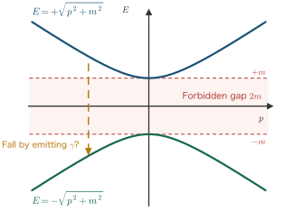
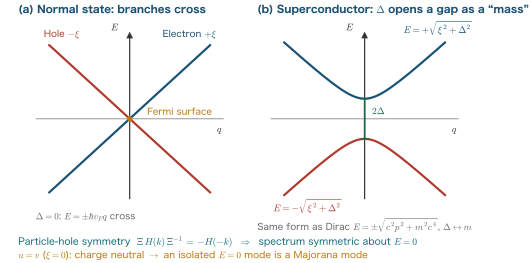

Chapter 9The Dirac Equation and Spinors
In 1928, relying on a single aesthetic demand—a wave equation that is relativistic and also first order in time—Paul Dirac wrote down just one line. Out of it, three things that no one had expected tumbled out automatically: spin $1/2$, the gyromagnetic ratio $g=2$, and antiparticles. In the history of physics, there are hardly any other equations that have yielded so much from so few assumptions.
This chapter carefully rebuilds that equation,
$$ \left(\ii\gamma^\mu\partial_\mu - m\right)\psi = 0 $$starting from the motivation at its point of departure. Why was the Klein–Gordon equation not good enough? Why must the $\gamma$ matrices be $4\times4$? Why are there four solutions, two of which have “negative energy”? And how must the negative-energy solutions be reinterpreted to become antiparticles? We follow all of this without skipping a single intermediate step.
Incidentally, for the materials scientists who read this book, this chapter is the most directly “usable” of all sixteen chapters. The reason is simple: the Dirac equation is everywhere inside solids. The low-energy effective Hamiltonian of graphene, $H=\hbar v_F\,\bm{\sigma}\cdot\kk$, is precisely the two-dimensional Dirac equation with $c$ replaced by $v_F\simeq 1\times10^6\ \mathrm{m/s}$, and the “mass” is the band gap. The low-energy excitations of the Weyl semimetal TaAs obey the Weyl equation, and the chiral anomaly, a concept of particle physics, has been reported as negative longitudinal magnetoresistance (though the interpretation requires care; see Section 9.7.3). The surface state of the topological insulator Bi$_2$Se$_3$ is a single Dirac cone. And the Bogoliubov–de Gennes equation of superconductivity mixes electrons and holes—in a sense, particles and antiparticles—and has the same mathematical structure as the Dirac equation. The Majorana condition $\gamma=\gamma^\dagger$ that appears there is literally the same equation as the condition for the Majorana neutrino treated in Chapter 14.
So the $\gamma$ matrices of this chapter are not tools of the high-energy laboratory alone. Merely by replacing $4\times4$ with $2\times2$, $c$ with $v_F$, and MeV with meV, the same algebra works unchanged inside a sample in the laboratory. The energy scales differ by eight or nine orders of magnitude, yet the equation is the same. The author believes that this fact is the strongest reason for materials scientists to learn particle physics.
In the second half of the chapter we also treat the photon (a vector field), the partner of the Dirac field. We prepare the covariant form of the Maxwell equations, gauge invariance, and the fact, indispensable for the QED calculations of Chapter 10, that “a real photon has only two transverse polarizations, whereas a virtual photon uses all four components.”
- To confirm in equations the two problems of the Klein–Gordon equation—negative probability density and negative-energy solutions
- That $\{\gamma^\mu,\gamma^\nu\}=2g^{\mu\nu}$ follows from the requirement “first order in time,” and why this algebra demands $4\times4$ matrices (the argument from traces and dimension)
- The explicit form of the $\gamma$ matrices in the Dirac–Pauli representation, the adjoint spinor $\bar\psi=\psi^\dagger\gamma^0$, and the positive-definite probability density $\rho=\psi^\dagger\psi$
- The four rest-frame solutions, and the explicit forms of $u(p,s)$ and $v(p,s)$ at general momentum (with the conventions $\bar u u=2m$, $u^\dagger u=2E$)
- That the ratio of the small component to the large component is $\abs{\pp}/(E+m)\simeq v/2c$
- That the Pauli equation emerges in the nonrelativistic limit and that $g=2$ is derived (the most important derivation)
- The Dirac sea, hole theory, the Feynman–Stückelberg interpretation, and the physical meaning of the $v$ spinor
- Proof of the completeness relations $\sum_s u\bar u=\slashed{p}+m$ and $\sum_s v\bar v=\slashed{p}-m$
- The sixteen bilinear covariants, the definition and properties of $\gamma^5$, and the fact that chirality and helicity coincide only for massless particles
- The left-handed and right-handed projection operators $P_{L,R}=(1\mp\gamma^5)/2$, and the fact that the mass term mixes $L$ and $R$
- The covariant form of the Maxwell equations, gauge invariance, the two transverse polarizations of the real photon, and the four components of the virtual photon
- Connection to materials science: optical phonons as a “massive Klein–Gordon field”
- Connection to materials science: graphene (Berry phase $\pi$, Klein tunneling), Weyl semimetals and the chiral anomaly, the surface Dirac cone of topological insulators
- Connection to materials science: the BdG equation and the Nambu spinor, particle–hole symmetry, the Majorana condition (a bridge to Chapter 14)
9.1 The Klein–Gordon Equation and Its Problems
9.1.1 A naive relativistic version
The nonrelativistic Schrödinger equation is obtained from the classical energy–momentum relation $E=\pp^2/2m$ by the canonical-quantization replacement
$$ \begin{equation} E \;\longrightarrow\; \ii\frac{\partial}{\partial t}, \qquad \pp \;\longrightarrow\; -\ii\nabla \label{eq:9-canonical} \end{equation} $$. It is natural to think that we should do the same in the relativistic case. The relativistic energy–momentum relation (Chapter 4) is
$$ \begin{equation} E^2 = \pp^2 + m^2, \qquad\text{that is}\qquad p^\mu p_\mu = m^2 \label{eq:9-dispersion} \end{equation} $$. Substituting \eqref{eq:9-canonical} into this gives
$$ -\frac{\partial^2\phi}{\partial t^2} = -\nabla^2\phi + m^2\phi $$that is,
This is the Klein–Gordon equation (KG equation). $\Box$ is called the d’Alembertian. Eq. \eqref{eq:9-kg} is manifestly Lorentz invariant: if $\phi$ is a scalar (a one-component quantity that is invariant under Lorentz transformations), then $\Box$ is also a scalar operator, so the whole equation takes the same form in all inertial frames.
Math Note: The historical order
In the course of searching for a wave equation in 1925, Schrödinger wrote down this relativistic equation first. However, when he applied it to the hydrogen atom, it did not agree with the experimental values of the fine structure (spin was not yet known at the time, so he could not notice that the spin–orbit interaction was missing). Disappointed, he discarded it and published the equation obtained in the nonrelativistic limit. That is the Schrödinger equation of today.
The discarded equation was rediscovered independently the following year, 1926, by Klein, Gordon, Fock, and others. We now know that this equation is correct for spin-0 particles (the $\pi$ meson, the Higgs boson). Schrödinger’s failure was not that “the equation was wrong” but that “it was wrong to apply it to the electron.”
9.1.2 Problem 1: Negative probability density
For the Schrödinger equation we could derive the positive-definite probability density $\rho=\abs{\psi}^2$ and a continuity equation that conserves it. Let us try the same thing for the KG equation.
Derivation: The continuity equation of the KG equation
Step 1: Multiply the equation by $\phi^*$. Multiplying Eq. \eqref{eq:9-kg} from the left by $\phi^*$ gives
$$ \phi^*\Box\phi + m^2\abs{\phi}^2 = 0 $$Step 2: Take the complex conjugate and multiply by $\phi$. The complex conjugate of \eqref{eq:9-kg} is $\Box\phi^*+m^2\phi^*=0$ ($m$ is real). Multiplying this from the left by $\phi$ gives
$$ \phi\,\Box\phi^* + m^2\abs{\phi}^2 = 0 $$Step 3: Subtract the two equations. The $m^2$ terms cancel, leaving
$$ \phi^*\Box\phi - \phi\,\Box\phi^* = 0 $$Step 4: Put it into the form of a total derivative. Here we use the identity
$$ \partial_\mu\!\left(\phi^*\partial^\mu\phi - \phi\,\partial^\mu\phi^*\right) = \phi^*\Box\phi + \partial_\mu\phi^*\partial^\mu\phi - \phi\,\Box\phi^* - \partial_\mu\phi\,\partial^\mu\phi^* = \phi^*\Box\phi - \phi\,\Box\phi^* $$(the two middle terms cancel each other). Therefore the result of Step 3 can be written as the continuity equation $\partial_\mu J^\mu=0$. Choosing the normalization constant, if we define
$$ \begin{equation} J^\mu \equiv \frac{\ii}{2m}\left(\phi^*\partial^\mu\phi - \phi\,\partial^\mu\phi^*\right) \label{eq:9-kg-current} \end{equation} $$then $\partial_\mu J^\mu = 0$, that is, $\partial\rho/\partial t + \nabla\cdot\bm{J}=0$. Here $\rho=J^0$.
Step 5: Evaluate $\rho$ for a plane wave. Substitute $\phi=N\ee^{-\ii p\cdot x}=N\ee^{-\ii(Et-\pp\cdot\xx)}$. Since $\partial^0\phi = \partial\phi/\partial t = -\ii E\phi$,
$$ \rho = J^0 = \frac{\ii}{2m}\left[\phi^*(-\ii E\phi) - \phi(+\ii E\phi^*)\right] = \frac{\ii}{2m}(-2\ii E)\abs{\phi}^2 = \frac{E}{m}\abs{N}^2 $$Here lies the problem. $\rho = (E/m)\abs{N}^2$ can be positive or negative depending on the sign of $E$. And the dispersion relation \eqref{eq:9-dispersion} allows the
$$ \begin{equation} E = \pm\sqrt{\pp^2+m^2} \label{eq:9-two-branches} \end{equation} $$two branches, so negative-energy solutions always exist. A negative probability density means that the probability interpretation does not hold.
9.1.3 Problem 2: Negative-energy solutions
In the first place, the negative branch of \eqref{eq:9-two-branches} is itself troublesome. In nonrelativistic theory $E=\pp^2/2m\ge0$, so no negative-energy states existed. In relativity, the energy spectrum splits into two sheets, $E\ge m$ and $E\le -m$, with a band gap of width $2m$ between them (Figure 9.1).
If negative-energy states really existed, a positive-energy electron would keep falling downward without limit while emitting photons, and stable matter could not exist. Estimating the rate of falling, the time for a hydrogen-atom $1s$ electron to make a transition to a state with $E<-m$ is of order $10^{-8}\ \mathrm{s}$. Since we are in fact here, something must be wrong.

Caution: The KG equation is not “wrong”
From the modern standpoint, $\phi$ is not a one-particle wave function but a field. When the field is quantized (the box “Quantization of the harmonic oscillator” in Section 8.3 of Chapter 8), $J^\mu$ is interpreted not as a probability current but as a charge current. The charge density may be negative—this just means that antiparticles contribute. The negative-energy solutions can likewise be reinterpreted as creation operators of antiparticles.
Therefore the KG equation is the correct equation for a spin-0 field, and both the Higgs boson ($m_H=125.25\ \mathrm{GeV}$) and the $\pi^0$ ($m=134.977\ \mathrm{MeV}$) obey it. However, Dirac in 1928 did not have this viewpoint. He was looking for a “one-particle wave function,” and in trying to cure Problem 1 within that constraint, he ended up unearthing a far greater treasure.
Connection to Materials Science: The optical phonon is a “massive Klein–Gordon field”
The dispersion relation of the KG equation, $E^2=\pp^2+m^2$, should in fact look rather familiar to materials scientists. Restoring $\hbar$ and $c$, we have
$$ (\hbar\omega)^2 = (\hbar c k)^2 + (mc^2)^2 \quad\Longleftrightarrow\quad \omega^2 = c^2k^2 + \omega_0^2,\qquad \omega_0\equiv \frac{mc^2}{\hbar} $$This has the same structure as an optical phonon branch with a finite gap $\omega_0$ at the $\Gamma$ point. The acoustic phonon ($\omega = v_s k$, no gap at the $\Gamma$ point) corresponds to a “massless KG field,” and the optical phonon corresponds to a “KG field of mass $m=\hbar\omega_0/c^2$.” However, the correspondence goes only as far as the structure “a wave equation of second order in time with a finite gap at the $\Gamma$ point”; the curvatures do not coincide. The KG form rises from the $\Gamma$ point with upward curvature as $\omega\simeq\omega_0+c^2k^2/2\omega_0$, whereas the curvature of an actual optical branch can be positive or negative depending on the material; in Si it decreases monotonically from $15.6\ \mathrm{THz}$ at the $\Gamma$ point toward the $X$ point (negative curvature). Cases that are KG-like even in the sign of the curvature are the antiferromagnetic magnon $\omega^2=v^2k^2+\Delta^2$ discussed later, the plasmon $\omega^2\simeq\omega_p^2+\tfrac35 v_F^2q^2$, and the upper branch of the phonon polariton. Note also that the $c$ in the formula is, in a solid, not the speed of light in vacuum but a velocity parameter that determines the dispersion of that branch (for a polariton, the speed of light in the medium).
Let us look at numbers. The $\Gamma$-point optical phonon of Si has $\nu_0\equiv\omega_0/2\pi = 15.6\ \mathrm{THz}$ (Raman shift $520\ \mathrm{cm^{-1}}$). Translating this into a “mass,”
$$ mc^2 = \hbar\omega_0 = h\nu_0 = 4.136\times10^{-15}\ \mathrm{eV\,s}\times 15.6\times10^{12}\ \mathrm{s^{-1}} = 64.5\ \mathrm{meV} $$This is seven orders of magnitude smaller than the electron’s $511\ \mathrm{keV}$, but the form of the equation is identical. Likewise, the magnon of an antiferromagnet has the KG-type dispersion $\omega^2 = v^2k^2+\Delta^2$ (anisotropy gap $\Delta$). The magnon of a ferromagnet, on the other hand, has $\omega\propto k^2$ and is of the Schrödinger type. The theme of this section, second order versus first order in time, is also a practical distinction that separates types of magnets.
And both Problem 1 and Problem 2 have counterparts. In a system with a KG-type dispersion, the two solutions for $\omega$, positive and negative, necessarily appear in pairs (Problem 2). Moreover, the Bogoliubov problem for bosons becomes an eigenvalue problem $\sigma_z H\psi=\omega\psi$ with a metric $\sigma_z$, and its eigenvectors have an indefinite norm, $\psi^\dagger\sigma_z\psi=\pm1$. This is the direct counterpart of the indefinite sign of the KG $\rho=(E/m)\abs{N}^2$ (Problem 1). That negative-energy, negative-norm solutions appear in the Bogoliubov transformation of magnons, and that a canonical transformation is needed to eliminate them, has the same structure as the argument of this section.
9.2 The Dirac Equation — The Gamble of Making It First Order
9.2.1 Dirac’s idea
Dirac’s diagnosis was clear. The reason the probability density of the KG equation fails to be positive definite is that the equation is second order in time. When we construct the continuity equation, $\partial\phi/\partial t$ remains in $\rho$, and through $-\ii E$ it brings in the sign of $E$. For the Schrödinger equation we could assert $\rho=\abs{\psi}^2\ge0$ because the equation is first order in time and no time derivative appeared in $\rho$.
Why?: What is good about first order?
Recall the procedure for constructing the continuity equation from an equation first order in time, $\ii\,\partial\psi/\partial t = \Ham\psi$. Taking the difference between the equation multiplied by $\psi^\dagger$ from the left and its conjugate multiplied by $\psi$ from the right, we obtain
$$ \ii\frac{\partial}{\partial t}\left(\psi^\dagger\psi\right) = \psi^\dagger(\Ham\psi) - (\Ham\psi)^\dagger\psi $$and the only thing that appears on the left-hand side is the time derivative of $\psi^\dagger\psi$. If $\Ham$ is Hermitian, the right-hand side becomes a total spatial derivative, and the positive-definite density $\rho=\psi^\dagger\psi\ge0$ is conserved. If the equation is second order in time, $\dot\phi$ enters $\rho$ itself and this structure breaks down. This is Dirac’s starting point.
In relativity, however, time and space must be on an equal footing. If the equation is first order in time, it must be first order in space as well, or it will not be Lorentz invariant. Dirac therefore assumed the form
$$ \begin{equation} \ii\frac{\partial\psi}{\partial t} = \left(-\ii\,\bm{\alpha}\cdot\nabla + \beta m\right)\psi \equiv \left(\bm{\alpha}\cdot\pp + \beta m\right)\psi \label{eq:9-dirac-ham} \end{equation} $$Here $\alpha^1,\alpha^2,\alpha^3,\beta$ are coefficients whose nature is as yet unknown. If they were mere numbers, the right-hand side would be linear in $\pp$, giving $E=\bm{\alpha}\cdot\pp+\beta m$, which bears no resemblance to the relativistic $E^2=\pp^2+m^2$. Dirac therefore allowed $\alpha^i,\beta$ to be matrices and $\psi$ to be a multicomponent column vector.
9.2.2 The algebra the coefficients must satisfy
Derivation: Relations that $\bm{\alpha}$ and $\beta$ must satisfy
Step 1: Set up the requirement. For the solutions to satisfy the relativistic dispersion relation \eqref{eq:9-dispersion}, each component of $\psi$ must satisfy the KG equation. We therefore differentiate \eqref{eq:9-dirac-ham} with respect to time once more to form the squared version.
Step 2: Apply the operator to both sides once more.
$$ -\frac{\partial^2\psi}{\partial t^2} = \left(\bm{\alpha}\cdot\pp+\beta m\right)^2\psi $$We expand the right-hand side. Since $\alpha^i$ and $\beta$ are matrices, we must not freely interchange their order. The $p^i=-\ii\partial_i$, on the other hand, commute with one another (partial derivatives can be taken in either order). Therefore
$$ \left(\bm{\alpha}\cdot\pp+\beta m\right)^2 = \sum_{i,j}\alpha^i\alpha^j p^i p^j + m\sum_i\left(\alpha^i\beta + \beta\alpha^i\right)p^i + \beta^2 m^2 $$Step 3: Symmetrize the first term. Since $p^ip^j = p^jp^i$, we may symmetrize the $\alpha^i\alpha^j$ part under $i\leftrightarrow j$:
$$ \sum_{i,j}\alpha^i\alpha^j p^ip^j = \sum_{i,j}\frac{1}{2}\left(\alpha^i\alpha^j+\alpha^j\alpha^i\right)p^ip^j $$Step 4: Compare coefficients with the KG equation. The goal is $-\partial_t^2\psi = (\pp^2+m^2)\psi$, that is, that the right-hand side becomes $\sum_i (p^i)^2 + m^2$. Comparing term by term, we find
Setting $i=j$ in the first relation gives $(\alpha^i)^2=\mathbb{1}$, and for $i\ne j$, $\alpha^i$ and $\alpha^j$ anticommute. In summary: the four matrices $\alpha^1,\alpha^2,\alpha^3,\beta$ must each square to the identity matrix and all mutually anticommute.
9.2.3 Why must the matrices be $4\times4$?
Four matrices anticommute with one another and each squares to $\mathbb{1}$. In what dimensions can such matrices be constructed? We narrow it down step by step.
Derivation: The necessity of $4\times4$
Step 1: Hermiticity. For the Hamiltonian $\Ham=\bm{\alpha}\cdot\pp+\beta m$ to be Hermitian, both $\alpha^i$ and $\beta$ must be Hermitian matrices.
Step 2: The eigenvalues are $\pm1$. Since $(\alpha^i)^2=\mathbb{1}$ and $\beta^2=\mathbb{1}$, an eigenvalue $\lambda$ satisfies $\lambda^2=1$, that is, $\lambda=\pm1$.
Step 3: The trace is zero. Multiplying both sides of $\alpha^i\beta=-\beta\alpha^i$ by $\beta$ from the right and using $\beta^2=\mathbb{1}$, we obtain
$$ \alpha^i\beta^2 = -\beta\alpha^i\beta \quad\Longrightarrow\quad \alpha^i = -\beta\alpha^i\beta $$Take the trace. By the cyclicity of the trace, $\Tr(ABC)=\Tr(CAB)$,
$$ \Tr\alpha^i = -\Tr\!\left(\beta\alpha^i\beta\right) = -\Tr\!\left(\alpha^i\beta^2\right) = -\Tr\alpha^i $$Hence $\Tr\alpha^i=0$. Similarly, starting from $\beta\alpha^i=-\alpha^i\beta$, we obtain $\Tr\beta=0$.
Step 4: The dimension is even. If the only eigenvalues are $\pm1$ and the trace (= the sum of the eigenvalues) is zero, then the numbers of $+1$ and $-1$ eigenvalues are equal. Therefore the dimension $N$ of the matrices must be even.
Step 5: $N=2$ is impossible. First, a set of matrices $\{M_k\}$ that mutually anticommute and square to $\mathbb{1}$ is linearly independent: multiply both sides of $\sum_k c_kM_k=0$ by $M_j$ and take the trace. With $\Tr(M_jM_k)=0$ ($j\ne k$; this follows from the anticommutation and the cyclicity of the trace) and $\Tr(M_j^2)=N$, we get $c_jN=0$, that is, $c_j=0$. Moreover, by Step 3 each $M_k$ is traceless. But the space of traceless Hermitian $2\times2$ matrices is only the three-dimensional space spanned by $\sigma^1,\sigma^2,\sigma^3$ ($\mathbb{1}$ is excluded because its trace is $2$). Four linearly independent matrices therefore do not fit, and $N=2$ is not enough.
Step 6: $N=4$ suffices. For $N=4$ we can actually construct them (shown explicitly in the next subsection). Hence the minimum dimension is $N=4$.
Physical Meaning: The meaning of four components is “$2\times2$”
The $N=4$ obtained here should be read as $2\times2=4$. One factor of $2$ is the spin degree of freedom (up and down), and the other factor of $2$ is the sign of the energy (particle and antiparticle).
Remarkably, Dirac did not bring spin into the equation as an assumption (his 1928 paper does mention spin itself, and argues rather that it ought to emerge naturally from a relativistic theory; what he did not include was a “spin term”). From the requirement “relativistic and first order in time” alone, $2\times2$ is not enough and $4\times4$ becomes necessary, and one of the $2$'s automatically appears as spin. Spin $1/2$ is not an assumption but a result. This is the first reason the Dirac equation is called “beautiful.”
The remaining $2$ becomes the antiparticle in Section 9.4. The Dirac equation predicted spin and antimatter at the same time.
9.2.4 The Dirac–Pauli representation
The set of $4\times4$ matrices satisfying the conditions \eqref{eq:9-alpha-beta} is not unique (there is freedom of unitary transformations), but in this book we take the following Dirac–Pauli representation (the standard representation) as our standard choice. Written in $2\times2$ blocks,
Here $\sigma^i$ are the Pauli matrices. Let us check the conditions.
- $\beta^2 = \mathrm{diag}(\mathbb{1},\mathbb{1})=\mathbb{1}_4$. $\checkmark$
- Since $\alpha^i\alpha^j = \begin{pmatrix}\sigma^i\sigma^j & 0\\ 0 & \sigma^i\sigma^j\end{pmatrix}$, $\alpha^i\alpha^j+\alpha^j\alpha^i$ has $\sigma^i\sigma^j+\sigma^j\sigma^i=2\delta^{ij}\mathbb{1}_2$ in its diagonal blocks. That is, it equals $2\delta^{ij}\mathbb{1}_4$. $\checkmark$
- $\alpha^i\beta = \begin{pmatrix}0&\sigma^i\\ \sigma^i&0\end{pmatrix}\begin{pmatrix}\mathbb{1}&0\\0&-\mathbb{1}\end{pmatrix} = \begin{pmatrix}0&-\sigma^i\\ \sigma^i&0\end{pmatrix}$, and $\beta\alpha^i = \begin{pmatrix}0&\sigma^i\\ -\sigma^i&0\end{pmatrix}$. The sum is zero. $\checkmark$
9.2.5 The covariant form and the $\gamma$ matrices
In Eq. \eqref{eq:9-dirac-ham}, time and space do not look equal. We therefore rewrite it in covariant form. Multiplying \eqref{eq:9-dirac-ham} by $\beta$ from the left (using $\beta^2=\mathbb{1}$) gives
$$ \ii\beta\frac{\partial\psi}{\partial t} + \ii\beta\alpha^i\partial_i\psi - m\psi = 0 $$Here we define the $\gamma$ matrices by
Definition: $\gamma$ matrices
$$ \begin{equation} \gamma^0\equiv\beta, \qquad \gamma^i\equiv\beta\alpha^i \quad(i=1,2,3) \label{eq:9-gamma-def} \end{equation} $$In the Dirac–Pauli representation, explicitly,
$$ \gamma^0=\begin{pmatrix}\mathbb{1}_2&0\\0&-\mathbb{1}_2\end{pmatrix}, \qquad \gamma^i=\begin{pmatrix}0&\sigma^i\\ -\sigma^i&0\end{pmatrix} $$With this definition, the equation above becomes $\ii\gamma^0\partial_0\psi+\ii\gamma^i\partial_i\psi-m\psi=0$, that is,
This is the Dirac equation. We write $\Dsl\equiv\gamma^\mu\partial_\mu$, and in general $\slashed{a}\equiv\gamma^\mu a_\mu$, and call this the Feynman slash.
Rewriting the conditions \eqref{eq:9-alpha-beta} in terms of $\gamma$, they combine into a single remarkably concise equation.
Theorem: Clifford algebra
$$ \begin{equation} \left\{\gamma^\mu,\gamma^\nu\right\} \equiv \gamma^\mu\gamma^\nu+\gamma^\nu\gamma^\mu = 2g^{\mu\nu}\,\mathbb{1}_4 \label{eq:9-clifford} \end{equation} $$This is called the Clifford algebra of the $\gamma$ matrices. The content of the Dirac equation is effectively exhausted by this single line.
Derivation: Verifying the Clifford algebra
$\mu=\nu=0$: $\{\gamma^0,\gamma^0\}=2\beta^2=2\mathbb{1}=2g^{00}\mathbb{1}$. Since $g^{00}=1$, this agrees.
$\mu=0,\nu=i$: $\gamma^0\gamma^i+\gamma^i\gamma^0 = \beta(\beta\alpha^i)+(\beta\alpha^i)\beta = \beta^2\alpha^i + \beta\alpha^i\beta$. For the second term, from $\alpha^i\beta=-\beta\alpha^i$ we have $\beta\alpha^i\beta = -\beta\beta\alpha^i=-\alpha^i$. Therefore $\alpha^i-\alpha^i=0=2g^{0i}\mathbb{1}$. Since $g^{0i}=0$, this agrees.
$\mu=i,\nu=j$:
$$ \gamma^i\gamma^j = \beta\alpha^i\beta\alpha^j = -\beta^2\alpha^i\alpha^j = -\alpha^i\alpha^j $$(we used $\alpha^i\beta=-\beta\alpha^i$ once). Hence
$$ \gamma^i\gamma^j+\gamma^j\gamma^i = -\left(\alpha^i\alpha^j+\alpha^j\alpha^i\right) = -2\delta^{ij}\mathbb{1} = 2g^{ij}\mathbb{1} $$Since $g^{ij}=-\delta^{ij}$, this agrees. Thus \eqref{eq:9-clifford} has been verified for all components.
Caution: $\gamma^\mu$ is not a four-vector
$\gamma^\mu$ carries an index $\mu$, but it is not a four-vector. $\gamma^\mu$ is a constant matrix that does not transform under Lorentz transformations, and the index is merely a notation that “numbers the four matrices.” What transforms under a Lorentz transformation is $\psi$, and the combination $\bar\psi\gamma^\mu\psi$ behaves, as a result, like a four-vector (Section 9.5).
Also, $\gamma^\mu$ is not Hermitian. Specifically,
$$ \gamma^{0\dagger}=\gamma^0,\qquad \gamma^{i\dagger}=-\gamma^i, \qquad\text{collectively}\qquad \gamma^{\mu\dagger}=\gamma^0\gamma^\mu\gamma^0 $$The last relation indeed holds: for $\mu=0$, $\gamma^0\gamma^0\gamma^0=\gamma^0$, and for $\mu=i$, $\gamma^0\gamma^i\gamma^0=-\gamma^i\gamma^0\gamma^0=-\gamma^i$.
9.2.6 The adjoint spinor and the conserved current
Since $\gamma^\mu$ is not Hermitian, naively forming $\psi^\dagger\psi$ does not give a Lorentz scalar. The correct partner is the following.
Definition: Adjoint spinor
$$ \begin{equation} \bar\psi \equiv \psi^\dagger\gamma^0 \label{eq:9-adjoint} \end{equation} $$If $\psi$ is a four-component column vector, $\bar\psi$ is a four-component row vector.
Derivation: The adjoint equation and the conserved current
Step 1: Take the Hermitian conjugate of the Dirac equation. Taking the $\dagger$ of \eqref{eq:9-dirac} (we leave $\partial_\mu$ alone since it is a real operator) gives
$$ -\ii\,\partial_\mu\psi^\dagger\gamma^{\mu\dagger} - m\psi^\dagger = 0 $$Step 2: Substitute $\gamma^{\mu\dagger}=\gamma^0\gamma^\mu\gamma^0$.
$$ -\ii\,\partial_\mu\psi^\dagger\gamma^0\gamma^\mu\gamma^0 - m\psi^\dagger = 0 $$Step 3: Multiply by $\gamma^0$ from the right. Using $(\gamma^0)^2=\mathbb{1}$, we obtain
$$ -\ii\,\partial_\mu\left(\psi^\dagger\gamma^0\right)\gamma^\mu - m\left(\psi^\dagger\gamma^0\right) = 0 $$that is, the adjoint Dirac equation for $\bar\psi$,
$$ \begin{equation} \ii\,\partial_\mu\bar\psi\,\gamma^\mu + m\bar\psi = 0 \label{eq:9-adjoint-eq} \end{equation} $$(we multiplied the whole equation by $-1$). In the notation with an arrow, this is written $\bar\psi(\ii\overleftarrow{\Dsl}+m)=0$.
Step 4: Construct the continuity equation. Multiply \eqref{eq:9-dirac} by $\bar\psi$ from the left and \eqref{eq:9-adjoint-eq} by $\psi$ from the right, and add:
$$ \underbrace{\ii\bar\psi\gamma^\mu\partial_\mu\psi - m\bar\psi\psi}_{\text{Dirac}} +\underbrace{\ii(\partial_\mu\bar\psi)\gamma^\mu\psi + m\bar\psi\psi}_{\text{adjoint}} = \ii\,\partial_\mu\left(\bar\psi\gamma^\mu\psi\right) = 0 $$The mass terms cancel each other, and the result is neatly a total derivative.
Step 5: Read off the probability density. We define the conserved current by
Its time component is
$$ \rho = j^0 = \bar\psi\gamma^0\psi = \psi^\dagger\gamma^0\gamma^0\psi = \psi^\dagger\psi = \sum_{a=1}^{4}\abs{\psi_a}^2 \;\ge\; 0 $$With this, Problem 1 has been completely cured. The probability density $\rho=\psi^\dagger\psi$ is a sum of squared absolute values of the components, so it is nonnegative for any solution. Dirac’s gamble paid off.
However, Problem 2 (the negative-energy solutions) has not been cured. When we find the solutions explicitly in the next section, solutions with $E<0$ still appear. How to interpret them is the subject of Section 9.4.
9.3 Solutions of the Dirac Equation
9.3.1 The four solutions in the rest frame
We start with the simplest case, a particle at rest ($\pp=0$). If $\pp=0$, then $\psi$ does not depend on the spatial coordinates, so $\partial_i\psi=0$. The Dirac equation \eqref{eq:9-dirac} becomes
$$ \ii\gamma^0\frac{\partial\psi}{\partial t} = m\psi \quad\Longrightarrow\quad \ii\frac{\partial\psi}{\partial t} = m\gamma^0\psi $$(We multiplied from the left by $\gamma^0$, using $(\gamma^0)^2=\mathbb{1}$.) Since $\gamma^0=\mathrm{diag}(1,1,-1,-1)$ is a diagonal matrix, the four components separate completely:
$$ \ii\dot\psi_1 = +m\psi_1,\quad \ii\dot\psi_2 = +m\psi_2,\quad \ii\dot\psi_3 = -m\psi_3,\quad \ii\dot\psi_4 = -m\psi_4 $$Each can be integrated immediately:
$$ \begin{equation} \psi^{(1,2)} \propto \ee^{-\ii m t}\ (E=+m), \qquad \psi^{(3,4)} \propto \ee^{+\ii m t}\ (E=-m) \label{eq:9-rest-solutions} \end{equation} $$Written out explicitly, the four independent solutions are
$$ \psi^{(1)}=\ee^{-\ii mt}\begin{pmatrix}1\\0\\0\\0\end{pmatrix},\quad \psi^{(2)}=\ee^{-\ii mt}\begin{pmatrix}0\\1\\0\\0\end{pmatrix},\quad \psi^{(3)}=\ee^{+\ii mt}\begin{pmatrix}0\\0\\1\\0\end{pmatrix},\quad \psi^{(4)}=\ee^{+\ii mt}\begin{pmatrix}0\\0\\0\\1\end{pmatrix} $$The upper two have $E=+m$ and the lower two have $E=-m$. In each pair, the twofold degeneracy corresponds to the two spin orientations of the particle at rest. Note that the negative-energy solutions have not disappeared.
9.3.2 General momentum: plane-wave solutions
Next we solve for general $\pp$. We assume the plane-wave form
$$ \begin{equation} \psi(x) = u(p)\,\ee^{-\ii p\cdot x}, \qquad p\cdot x = Et - \pp\cdot\xx \label{eq:9-planewave-u} \end{equation} $$Here $u(p)$ is a constant four-component spinor independent of $x$. Since $\partial_\mu\ee^{-\ii p\cdot x}=-\ii p_\mu\ee^{-\ii p\cdot x}$, the Dirac equation becomes an algebraic equation:
Derivation: Explicit form of $u(p)$
Step 1: Write $\slashed{p}$ in blocks. We have $\slashed{p}=\gamma^\mu p_\mu = \gamma^0 p_0+\gamma^i p_i$. With $p_0=E$ and $p_i=-p^i$, this gives $\slashed{p}=\gamma^0E-\bm{\gamma}\cdot\pp$. Substituting the block representation, we obtain
$$ \slashed{p} = \begin{pmatrix}E&0\\0&-E\end{pmatrix} - \begin{pmatrix}0&\bm{\sigma}\cdot\pp\\ -\bm{\sigma}\cdot\pp&0\end{pmatrix} = \begin{pmatrix}E & -\bm{\sigma}\cdot\pp\\ \bm{\sigma}\cdot\pp & -E\end{pmatrix} $$Step 2: Split $u$ into upper and lower two-component parts. Let $u=\begin{pmatrix}u_A\\u_B\end{pmatrix}$ ($u_A,u_B$ are two-component spinors). Then \eqref{eq:9-u-equation} reads
$$ \begin{pmatrix}E-m & -\bm{\sigma}\cdot\pp\\ \bm{\sigma}\cdot\pp & -E-m\end{pmatrix} \begin{pmatrix}u_A\\u_B\end{pmatrix}=0 $$that is, the simultaneous equations
$$ \begin{equation} (E-m)\,u_A = (\bm{\sigma}\cdot\pp)\,u_B, \qquad (E+m)\,u_B = (\bm{\sigma}\cdot\pp)\,u_A \label{eq:9-coupled} \end{equation} $$follow.
Step 3: Check the consistency condition (dispersion relation). Substituting the second equation into the first gives
$$ (E-m)(E+m)\,u_A = (\bm{\sigma}\cdot\pp)^2 u_A = \pp^2\,u_A $$Here we used the identity $(\bm{\sigma}\cdot\bm{a})(\bm{\sigma}\cdot\bm{b}) = \bm{a}\cdot\bm{b} + \ii\,\bm{\sigma}\cdot(\bm{a}\times\bm{b})$ with $\bm{a}=\bm{b}=\pp$ (and $\pp\times\pp=0$). Therefore $E^2-m^2=\pp^2$, that is, $E=\pm\sqrt{\pp^2+m^2}$, so once again both signs are allowed.
Step 4: Write down the positive-energy solution. We choose $E=+\sqrt{\pp^2+m^2}>0$. Choosing $u_A$ freely, $u_A=\chi$ (an arbitrary two-component spinor), the second equation of \eqref{eq:9-coupled} gives
$$ u_B = \frac{\bm{\sigma}\cdot\pp}{E+m}\,\chi $$(We may divide because $E+m>0$. We do not divide by $E-m$, to avoid a divergence as $\pp\to0$.) Hence
$$ \begin{equation} u(p,s) = N\begin{pmatrix}\chi_s\\[4pt] \dfrac{\bm{\sigma}\cdot\pp}{E+m}\chi_s\end{pmatrix}, \qquad \chi_{+1/2}=\begin{pmatrix}1\\0\end{pmatrix},\quad \chi_{-1/2}=\begin{pmatrix}0\\1\end{pmatrix} \label{eq:9-u-explicit} \end{equation} $$Step 5: Determine the normalization constant. In this book we adopt the convention $\bar u u = 2m$ (the reason is given later). Since $\bar u = u^\dagger\gamma^0 = N^*(\chi^\dagger,\ -\chi^\dagger\frac{\bm{\sigma}\cdot\pp}{E+m})$ ($\gamma^0$ reverses the sign of the lower two components; $\bm{\sigma}\cdot\pp$ is Hermitian), we have
$$ \bar u u = \abs{N}^2\left[\chi^\dagger\chi - \chi^\dagger\frac{(\bm{\sigma}\cdot\pp)^2}{(E+m)^2}\chi\right] = \abs{N}^2\left[1 - \frac{\pp^2}{(E+m)^2}\right] $$We simplify the numerator. Using $\pp^2=E^2-m^2=(E+m)(E-m)$, we get
$$ 1-\frac{(E+m)(E-m)}{(E+m)^2} = 1-\frac{E-m}{E+m} = \frac{(E+m)-(E-m)}{E+m}=\frac{2m}{E+m} $$Therefore $\bar u u = \abs{N}^2\,\dfrac{2m}{E+m}$. Setting this equal to $2m$, we find
Step 6: Also compute $u^\dagger u$.
$$ u^\dagger u = (E+m)\left[1+\frac{\pp^2}{(E+m)^2}\right] = \frac{(E+m)^2+\pp^2}{E+m} = \frac{E^2+2Em+m^2+E^2-m^2}{E+m} = \frac{2E(E+m)}{E+m}=2E $$That is, $u^\dagger u = 2E$. This corresponds to the normalization in which $\rho=\psi^\dagger\psi$ gives “$2E$ particles per unit volume.”
Caution: Normalization conventions differ from book to book
There are two main conventions for the normalization of spinors.
- $\bar u u = 2m$, $u^\dagger u = 2E$ (this book, Griffiths, Peskin): combined with the Lorentz-invariant volume element $\dd^3p/[(2\pi)^32E]$. Since $u$ itself does not diverge as $m\to0$, it is easy to treat massless particles such as neutrinos.
- $\bar u u = 1$, $u^\dagger u = E/m$ (older textbooks such as Bjorken–Drell): breaks down as $m\to0$.
The final results for cross sections and decay rates are of course the same in either convention, but the placement of intermediate factors such as $2m$ or $\sqrt{2E}$ changes. When comparing with equations in other books, always check the convention (the conventions of this book are summarized in Appendices B and D).
9.3.3 Large and small components
Looking at Eq. \eqref{eq:9-u-normalized}, the ratio of the magnitudes of the upper two components $u_A=\chi$ and the lower two components $u_B$ is
In the nonrelativistic limit ($\abs{\pp}\ll m$, $E\simeq m$) this becomes
$$ \frac{\abs{u_B}}{\abs{u_A}} \simeq \frac{\abs{\pp}}{2m} = \frac{mv}{2m}=\frac{v}{2} \qquad(\text{restoring $c$ } v/2c) $$so $u_B$ is smaller than $u_A$ by a factor of $v/2c$. We therefore call $u_A$ the large component and $u_B$ the small component.
Example: The small component of the $1s$ electron in the hydrogen atom
The typical velocity of the $1s$ electron in the hydrogen atom is $v/c\simeq\alpha=1/137$ ($v=\alpha c$ in the Bohr model). Therefore
$$ \frac{\abs{u_B}}{\abs{u_A}} \simeq \frac{\alpha}{2} = \frac{1}{274} = 3.6\times10^{-3} $$In terms of probability, $\abs{u_B}^2/\abs{u_A}^2 \simeq 1.3\times10^{-5}$. That is, $99.9987\%$ of the hydrogen $1s$ electron is described by the “large component.” This is why the nonrelativistic Schrödinger equation works so surprisingly well for the hydrogen atom.
For heavy atoms, on the other hand, this is no longer the case. For large $Z$ we have $v/c\simeq Z\alpha$, so for the $1s$ electron of gold ($Z=79$) we get $v/c\simeq 0.58$, and the small component cannot be neglected. The fact that gold is yellow rather than silvery white, and that mercury is a liquid at room temperature, are due to this relativistic effect (the contraction of the $6s$ orbital). The reason that first-principles calculations of heavy elements must include scalar relativistic corrections and spin–orbit coupling is precisely that the small component becomes important.
9.3.4 Negative-energy solutions and the $v$ spinor
The negative-energy solutions can be written down by the same procedure. For later convenience (Section 9.4), however, it is useful to treat them from the start in a form with the sign reversed. That is,
$$ \begin{equation} \psi(x) = v(p)\,\ee^{+\ii p\cdot x}, \qquad p^0=E=+\sqrt{\pp^2+m^2}>0 \label{eq:9-planewave-v} \end{equation} $$Since the sign of the exponent in $\ee^{+\ii p\cdot x}$ is reversed, $\partial_\mu\to+\ii p_\mu$, and the Dirac equation becomes
(it differs from the equation for $u$ only in the sign of the mass term).
Derivation: Explicit form of $v(p)$
Step 1: Write it in blocks.
$$ \begin{pmatrix}E+m & -\bm{\sigma}\cdot\pp\\ \bm{\sigma}\cdot\pp & -E+m\end{pmatrix} \begin{pmatrix}v_A\\v_B\end{pmatrix}=0 $$Step 2: Solve the first row. We have $(E+m)v_A=(\bm{\sigma}\cdot\pp)v_B$. This time we choose $v_B$ freely (dividing by $E+m$ causes no divergence): letting $v_B=\eta$, we get
$$ v_A = \frac{\bm{\sigma}\cdot\pp}{E+m}\,\eta $$Step 3: Check that the second row is satisfied automatically.
$$ (\bm{\sigma}\cdot\pp)v_A + (m-E)v_B = \frac{\pp^2}{E+m}\eta - (E-m)\eta = \frac{\pp^2-(E-m)(E+m)}{E+m}\eta = \frac{\pp^2-(E^2-m^2)}{E+m}\eta = 0 $$By the dispersion relation it is indeed zero. $\checkmark$
Step 4: Normalization. By exactly the same calculation as for $u$, $\bar v v = \abs{N}^2\left[\frac{\pp^2}{(E+m)^2}-1\right] = -\abs{N}^2\frac{2m}{E+m}$ (note that the sign is reversed). Taking $N=\sqrt{E+m}$, we obtain
Note that for $v$ the lower two components are the large component and the upper two components are the small component. In the nonrelativistic limit, $v$ reduces to the rest solution having only the lower two components.
Theorem: Orthogonality relations
The four spinors belonging to the same momentum $p$ are mutually orthogonal:
$$ \begin{equation} \bar u(p,s)u(p,s')=2m\,\delta_{ss'}, \quad \bar v(p,s)v(p,s')=-2m\,\delta_{ss'}, \quad \bar u(p,s)v(p,s')=\bar v(p,s)u(p,s')=0 \label{eq:9-orthogonality} \end{equation} $$Also, $u^\dagger(p,s)u(p,s')=v^\dagger(p,s)v(p,s')=2E\delta_{ss'}$, but note that $u^\dagger(p,s)v(p,s')\ne0$ ($u^\dagger(p,s)v(\tilde p,s')=0$ holds when $\tilde p=(E,-\pp)$).
9.3.5 The nonrelativistic limit and $g=2$
This is the climax of the chapter. When we introduce the electromagnetic field into the Dirac equation and take the nonrelativistic limit, the Pauli equation emerges. Moreover, the coefficient of the magnetic moment—the $g$-factor—comes out as the value $2$ without being put in.
Definition: Minimal coupling
To place a particle of charge $q$ in an electromagnetic field $A^\mu=(\phi,\bm{A})$, we replace the derivative by the covariant derivative:
$$ \begin{equation} \partial_\mu \;\longrightarrow\; D_\mu \equiv \partial_\mu + \ii q A_\mu \qquad\Longleftrightarrow\qquad E\to E-q\phi,\quad \pp\to\bm{\pi}\equiv\pp-q\bm{A} \label{eq:9-minimal-coupling} \end{equation} $$This is called minimal coupling. Why this is correct will be explained in Chapter 13 through the gauge principle. For the electron, $q=-e$ ($e>0$).
Derivation: The Pauli equation and $g=2$ (the most important derivation in this chapter)
Step 1: Write the simultaneous equations with the electromagnetic field. In \eqref{eq:9-coupled}, replace $E\to E-q\phi$ and $\pp\to\bm{\pi}$:
$$ \begin{equation} (E-q\phi-m)\,\psi_A = (\bm{\sigma}\cdot\bm{\pi})\,\psi_B, \qquad (E-q\phi+m)\,\psi_B = (\bm{\sigma}\cdot\bm{\pi})\,\psi_A \label{eq:9-coupled-em} \end{equation} $$Step 2: Separate the rest energy. The energy of a nonrelativistic particle is the rest energy $m$ plus a small amount. We therefore write
$$ E = m + \varepsilon, \qquad \abs{\varepsilon}\ll m,\quad \abs{q\phi}\ll m $$Here $\varepsilon$ is the “nonrelativistic energy.”
Step 3: Eliminate the small component. In the second equation of \eqref{eq:9-coupled-em}, approximating $E-q\phi+m = 2m+\varepsilon-q\phi \simeq 2m$, we obtain
$$ \begin{equation} \psi_B \simeq \frac{\bm{\sigma}\cdot\bm{\pi}}{2m}\,\psi_A \label{eq:9-small-elim} \end{equation} $$This is a generalization of \eqref{eq:9-small-large} ($\abs{\psi_B}/\abs{\psi_A}\sim v/2$).
Step 4: Substitute into the first equation. The left-hand side of the first equation is $(m+\varepsilon-q\phi-m)\psi_A=(\varepsilon-q\phi)\psi_A$, so
$$ \begin{equation} (\varepsilon-q\phi)\,\psi_A = \frac{(\bm{\sigma}\cdot\bm{\pi})^2}{2m}\,\psi_A \label{eq:9-before-pauli} \end{equation} $$So far, the four-component equation has become a two-component equation. What remains is the computation of $(\bm{\sigma}\cdot\bm{\pi})^2$.
Step 5: Expand $(\bm{\sigma}\cdot\bm{\pi})^2$. We apply the identity
$$ (\bm{\sigma}\cdot\bm{a})(\bm{\sigma}\cdot\bm{b}) = \bm{a}\cdot\bm{b} + \ii\,\bm{\sigma}\cdot(\bm{a}\times\bm{b}) $$with $\bm{a}=\bm{b}=\bm{\pi}$. The point to note is that $\bm{\pi}$ is an operator, so $\bm{\pi}\times\bm{\pi}\ne0$. This is the source of $g=2$.
Step 6: Compute $\bm{\pi}\times\bm{\pi}$. We let it act on an arbitrary function $f$. Since $\bm{\pi}=\pp-q\bm{A}=-\ii\nabla-q\bm{A}$,
$$ (\bm{\pi}\times\bm{\pi})f = (\pp-q\bm{A})\times(\pp-q\bm{A})f = \underbrace{\pp\times\pp f}_{=0} - q\left(\pp\times\bm{A}f + \bm{A}\times\pp f\right) + q^2\underbrace{\bm{A}\times\bm{A}}_{=0}f $$We compute the remaining terms. Since $\pp=-\ii\nabla$,
$$ \pp\times(\bm{A}f) = -\ii\nabla\times(\bm{A}f) = -\ii\left[(\nabla\times\bm{A})f - \bm{A}\times\nabla f\right] = -\ii(\nabla\times\bm{A})f - \bm{A}\times\pp f $$(We used $\nabla\times(f\bm{A}) = f\nabla\times\bm{A}+(\nabla f)\times\bm{A} = f\nabla\times\bm{A}-\bm{A}\times\nabla f$.) Therefore
$$ \pp\times(\bm{A}f)+\bm{A}\times\pp f = -\ii(\nabla\times\bm{A})f = -\ii\bm{B}f $$Collecting terms,
$$ \begin{equation} \bm{\pi}\times\bm{\pi} = -q\times(-\ii\bm{B}) = \ii q\bm{B} \label{eq:9-pi-cross} \end{equation} $$The cross product of operators with themselves has turned into the magnetic field itself.
Step 7: Return to Step 5.
$$ (\bm{\sigma}\cdot\bm{\pi})^2 = \bm{\pi}^2 + \ii\,\bm{\sigma}\cdot(\ii q\bm{B}) = \bm{\pi}^2 - q\,\bm{\sigma}\cdot\bm{B} $$Step 8: Write down the Pauli equation. Substituting into \eqref{eq:9-before-pauli}, we obtain
This is the Pauli equation. The first term is the ordinary kinetic energy, the third term is the electrostatic potential, and the second term is the coupling of the spin to the magnetic field.
Step 9: Read off the $g$-factor. The spin operator is $\bm{S}=\bm{\sigma}/2$. Writing the second term in the form $-\bm{\mu}\cdot\bm{B}$, we have
$$ -\frac{q}{2m}\bm{\sigma}\cdot\bm{B} = -\frac{q}{m}\bm{S}\cdot\bm{B} = -\bm{\mu}\cdot\bm{B} \quad\Longrightarrow\quad \bm{\mu} = \frac{q}{m}\bm{S} = g\,\frac{q}{2m}\bm{S} $$That is,
Physical Meaning: The shock of $g=2$
When a classical charged particle undergoes orbital motion, its magnetic moment is $\bm{\mu}=(q/2m)\bm{L}$. That is, the $g$-factor for orbital angular momentum is $1$. Experiments, however, showed that the $g$-factor for the electron’s spin angular momentum is about $2$ (a puzzle since Uhlenbeck–Goudsmit in 1925). Why only the spin should have a factor of two, no one could explain.
The Dirac equation produced this without a single extra assumption. The origin of $g=2$ is, in the end, nothing but $\bm{\pi}\times\bm{\pi}=\ii q\bm{B}$ in Step 6, that is, the basic structure of quantum mechanics that “the momentum operators do not commute.”
It was later found that $g$ is not exactly 2 but deviates slightly from it because of radiative corrections in quantum electrodynamics (Chapter 10):
$$ a_e \equiv \frac{g-2}{2} = \frac{\alpha}{2\pi} - 0.328478\left(\frac{\alpha}{\pi}\right)^2 + \cdots $$The first-order term alone gives $\alpha/2\pi = 1/(2\pi\times137.036)=1.16141\times10^{-3}$. The experimental value is $a_e^{\text{exp}} = 1.15965218\times10^{-3}$, which agrees with the theoretical calculation through five loops ($\alpha^5$) to about 10 digits in the value of $a_e$ (counting in terms of the digits of $g$ itself, it is 12 digits. What limits the present level of agreement is the measured value of the input $\alpha$; the values of $\alpha$ determined from Cs atom recoil and from Rb atom recoil disagree with each other). It is one of the most precisely tested predictions in physics.
Math Note: What appears at the next order
If we carry the approximation $E-q\phi+m\simeq 2m$ of Step 3 to first order in $(\varepsilon-q\phi)/2m$ (or perform a Foldy–Wouthuysen transformation), three correction terms are added to the Pauli equation:
$$ -\frac{\pp^4}{8m^3} \;-\;\frac{q}{4m^2}\,\bm{\sigma}\cdot\left(\bm{E}\times\pp\right) \;-\;\frac{q}{8m^2}\,\nabla\cdot\bm{E} $$In order, these are the relativistic kinetic-energy correction, the spin–orbit interaction, and the Darwin term. The three terms that we introduced without justification when we calculated the fine structure of the hydrogen atom in Chapter 7 now emerge systematically from the Dirac equation. For a central force, $\bm{E}=-\nabla\phi=-(1/r)(\dd\phi/\dd r)\bm{r}$, the second term takes the form $\propto \bm{S}\cdot\bm{L}$, and it is also important that the coefficient automatically contains the “Thomas factor $1/2$.”
9.4 Negative-Energy Solutions and Antiparticles
9.4.1 Why we cannot discard the troublesome solutions
We would like to dispose of the negative-energy solutions by saying “they are unphysical, so we discard them.” But we cannot. The reasons are as follows.
- They do not form a complete set. Suppose that at some time we build a wave packet from a superposition of positive-energy solutions only. In the presence of an electromagnetic field, negative-energy components arise under time evolution. Two positive-energy solutions out of the four independent solutions cannot expand an arbitrary initial condition.
- The Klein paradox. When an electron is sent against a step potential of height $V_0>E+m$, the amplitude of the transmitted wave takes a magnitude that is classically impossible (Klein, 1929). This happens because, inside the barrier, the “negative-energy states” overlap the positive-energy region.
- Lorentz invariance. For the set of solutions to be closed under Lorentz transformations, branches of both signs are needed.
9.4.2 Dirac’s hole theory
In 1930 Dirac made a startling proposal. The vacuum is the state in which all the negative-energy states are filled with electrons—this is the Dirac sea.
The electron is a fermion, so it obeys the Pauli exclusion principle. If all the negative-energy levels are already occupied, a positive-energy electron cannot fall into them. In this way “Problem 2” is solved. What we have been calling the “vacuum” is, in fact, a state packed with an infinite number of negative-energy electrons.
Derivation: Quantum numbers of the hole
Suppose that one electron in the sea (charge $-e$, energy $-E$, momentum $-\pp$, spin $-\bm{s}$) is knocked out into the positive-energy region by a photon. We find the quantum numbers of the remaining “hole” by subtracting the quantum numbers of the removed electron from the “quantum numbers of the whole sea.”
Step 1: Define the quantum numbers of the vacuum to be zero. We define the charge, energy, and momentum of the entire filled sea to be zero (renormalization of an infinity).
Step 2: Subtract.
$$ \begin{aligned} \text{charge of the hole} &= 0 - (-e) = +e \\ \text{energy of the hole} &= 0 - (-E) = +E \;(>0)\\ \text{momentum of the hole} &= 0 - (-\pp) = +\pp \\ \text{spin of the hole} &= 0 - (-\bm{s}) = +\bm{s} \end{aligned} $$Step 3: Interpret. The hole behaves as a positive-energy particle with the same mass and the same spin as the electron, and only the charge reversed. This is the positron.
Dirac at first took this hole to be the “proton” (the proton was the only positively charged particle known at the time). However, Weyl and Oppenheimer pointed out that the mass of the hole must be the same as that of the electron. In 1932, Anderson discovered, in a cloud-chamber photograph of cosmic rays, a positively charged particle with the same mass as the electron. This was the experimental discovery of the positron (Chapter 2).
Caution: The Dirac sea has been abandoned in modern theory
The hole theory is beautiful and played a large historical role, but it has serious difficulties.
- An infinite number of negative-energy electrons has an infinite charge density and an infinite energy density (declaring these to be “zero by definition” is hard to defend).
- It cannot be used for bosons. The $\pi$ meson and the $W$ boson also have antiparticles, but since there is no Pauli exclusion principle, the sea cannot be filled.
- Lorentz invariance is hard to see (the “filled sea” appears to single out a particular inertial frame).
In modern quantum field theory, $\psi$ is made an operator, and the coefficients of the negative-energy solutions are reinterpreted as creation operators for antiparticles. In this way the Hamiltonian becomes bounded from below, and the sea is no longer needed. The hole picture, however, is still in active use in condensed matter physics as the holes of semiconductors (see below).
9.4.3 Feynman–Stückelberg interpretation
Another reinterpretation, and the one that is by far the easiest to use in calculations, is that of Stückelberg (1941) and Feynman (1949).
Definition: Feynman–Stückelberg interpretation
A solution with negative energy $-E$ and momentum $-\pp$ that propagates backward in time is physically equivalent to an antiparticle with positive energy $+E$ and momentum $+\pp$ that propagates forward in time.
In terms of equations, this amounts to nothing more than rewriting the sign of the exponent:
$$ \ee^{-\ii(-E)t}\ee^{\ii(-\pp)\cdot\xx} = \ee^{+\ii Et}\ee^{-\ii\pp\cdot\xx} = \ee^{+\ii p\cdot x} $$The right-hand side is exactly the exponential factor attached to the $v$ spinor in \eqref{eq:9-planewave-v}. Therefore
Theorem: Meaning of the $v$ spinor
$v(p,s)\ee^{+\ii p\cdot x}$ represents an antiparticle with momentum $\pp$, energy $E=+\sqrt{\pp^2+m^2}$, and spin $s$.
However, care is needed in assigning the spin. The two-component spinor $\eta_s$ put into $v(p,s)$ points in the direction opposite to the spin direction of the antiparticle. That is, the spin-up state of the antiparticle is written with $\eta = \begin{pmatrix}0\\1\end{pmatrix}$. This can be understood from the hole picture (the spin of the hole is the opposite of the spin of the removed electron).
Connection to Materials Science: The hole in a semiconductor is the “solid-state version of the positron”
Looking at Figure 9.2(b), readers who know semiconductor physics must have felt a sense of déjà vu. It is not an illusion. At the level of the procedure of constructing the hole as “a quasiparticle whose quantum numbers are those of the removed electron with the signs reversed,” the correspondence is exact.
| Particle physics | Semiconductor physics | Remarks |
|---|---|---|
| Negative-energy continuum | Valence band | Full in the ground state |
| Positive-energy continuum | Conduction band | Empty in the ground state |
| Band gap $2m=1.022\ \mathrm{MeV}$ | Band gap $E_g$ (Si: $1.12\ \mathrm{eV}$) | Six orders of magnitude apart, but the same role |
| Hole = positron $e^+$ | Hole | Charge $+e$, positive effective mass |
| Pair production $\gamma\to e^-e^+$ | Electron-hole pair production by light absorption | Threshold $2m$ ↔ $E_g$ |
| Pair annihilation $e^-e^+\to\gamma\gamma$ | Radiative recombination | Operating principle of the LED |
| Positronium | Exciton | Treated in Chapter 7 |
However, we must also note the points where the correspondence breaks down (Chapter 1, Section 1.2.4, “Limits of the correspondence — a hole is not a positron”).
- Mass. By the CPT theorem, the mass of the positron is exactly equal to that of the electron. By contrast, there is no reason at all for the effective mass of a hole to equal that of a conduction electron. In Si the electron has $m^*=0.98,\,0.19\,m_0$ (longitudinal, transverse) while the holes have $0.49,\,0.16\,m_0$ (heavy hole, light hole); they differ, and moreover they are anisotropic and multiband.
- Lorentz invariance. A crystal selects a particular rest frame, so there is no Lorentz symmetry connecting the positive-energy band and the negative-energy band. The Dirac-type description is only an effective theory for the region of small $\kk$.
- Depth of the sea. The valence band has a bottom, so the “sea” is finite and is not infinitely deep like the negative-energy continuum of the vacuum (as discussed below, this is also an advantage on the semiconductor side).
- Spin. The holes at the top of the valence band ($\Gamma_8$) of Si and GaAs have the character of $J=3/2$, unlike the $1/2$ of the electron.
- Binding energy. The ground state of positronium lies at $6.8\ \mathrm{eV}$, but the Wannier exciton in Si has $14.7\ \mathrm{meV}$. Because the coupling constant is replaced by $\alpha\to\alpha/\epsilon_r$ and the mass by $\mu\to\mu^*$, the same formula gives results that differ by nearly three orders of magnitude.
What we should note here is that at the level of the procedure, this is not an analogy. The procedure for introducing holes in the effective-mass approximation for semiconductors is identical, at the level of the equations, to the procedure of Dirac’s hole theory. Reading “a system from which one electron has been removed from the $\kk$ state of the valence band” as “a system containing one quasiparticle with momentum $-\kk$, charge $+e$, and effective mass $-m_v^*>0$” is precisely the derivation above. However, as listed above, the hole is a quasiparticle, and neither an exact match of the mass nor Lorentz invariance is guaranteed.
And what is important is the fact that condensed matter physics has continued to keep this picture in a form that can be “used”. In particle physics the sea picture was abandoned, but in a semiconductor the number of electrons in the valence band is finite, so the sea really exists and no divergence occurs. Materials scientists use the picture that Dirac conceived in 1930 every day in designing LEDs and transistors.
9.4.4 The completeness relation
When we compute a scattering amplitude with the Feynman rules of Chapter 8, the operation “sum over the spins of the final state and average over the spins of the initial state” always appears at the end. The relation used then is the following.
Theorem: Completeness (spin-sum) relations
The left-hand side is a “column vector times row vector,” so it is a $4\times4$ matrix. The right-hand side is also a $4\times4$ matrix, and the claim is that the two are equal.
Derivation: $\sum_s u\bar u = \slashed{p}+m$
Step 1: Write $u$ and $\bar u$ in blocks. From \eqref{eq:9-u-normalized}, abbreviating $\lambda\equiv\bm{\sigma}\cdot\pp/(E+m)$, we have
$$ u = \sqrt{E+m}\begin{pmatrix}\chi_s\\ \lambda\chi_s\end{pmatrix}, \qquad \bar u = u^\dagger\gamma^0 = \sqrt{E+m}\left(\chi_s^\dagger,\ -\chi_s^\dagger\lambda\right) $$($\gamma^0$ reverses the sign of the lower two components. Since $\lambda$ is Hermitian, $\lambda^\dagger=\lambda$.)
Step 2: Form the outer product.
$$ u\bar u = (E+m)\begin{pmatrix}\chi_s\chi_s^\dagger & -\chi_s\chi_s^\dagger\lambda\\ \lambda\chi_s\chi_s^\dagger & -\lambda\chi_s\chi_s^\dagger\lambda\end{pmatrix} $$Step 3: Sum over spins. Using the completeness of the two-component spinors
$$ \sum_{s=\pm1/2}\chi_s\chi_s^\dagger = \begin{pmatrix}1\\0\end{pmatrix}(1,0)+\begin{pmatrix}0\\1\end{pmatrix}(0,1) = \begin{pmatrix}1&0\\0&1\end{pmatrix} = \mathbb{1}_2 $$we obtain
$$ \sum_s u\bar u = (E+m)\begin{pmatrix}\mathbb{1} & -\lambda\\ \lambda & -\lambda^2\end{pmatrix} $$Step 4: Simplify each block.
Upper left: $(E+m)\mathbb{1}$.
Upper right: $-(E+m)\lambda = -(E+m)\dfrac{\bm{\sigma}\cdot\pp}{E+m} = -\bm{\sigma}\cdot\pp$.
Lower left: $+\bm{\sigma}\cdot\pp$.
Lower right: $\lambda^2 = \dfrac{(\bm{\sigma}\cdot\pp)^2}{(E+m)^2}=\dfrac{\pp^2}{(E+m)^2}=\dfrac{(E+m)(E-m)}{(E+m)^2}=\dfrac{E-m}{E+m}$, so $-(E+m)\lambda^2 = -(E-m)$.
Collecting these,
$$ \sum_s u\bar u = \begin{pmatrix}E+m & -\bm{\sigma}\cdot\pp\\ \bm{\sigma}\cdot\pp & -(E-m)\end{pmatrix} $$Step 5: Compare with $\slashed{p}+m$. Adding $m\,\mathbb{1}_4=\begin{pmatrix}m&0\\0&m\end{pmatrix}$ to $\slashed{p}=\begin{pmatrix}E&-\bm{\sigma}\cdot\pp\\ \bm{\sigma}\cdot\pp&-E\end{pmatrix}$, obtained in Step 1 of Section 9.3.2, gives
$$ \slashed{p}+m = \begin{pmatrix}E+m & -\bm{\sigma}\cdot\pp\\ \bm{\sigma}\cdot\pp & -E+m\end{pmatrix} $$This agrees exactly with the result of Step 4. $\blacksquare$
A similar calculation for $v$, with signs reversed at various places, gives $\sum_s v\bar v=\slashed{p}-m$ (Exercise 9.2).
Physical Meaning: Why the form $\slashed{p}\pm m$?
$\slashed{p}+m$ is (up to a factor of $2m$) the projection operator onto the two-dimensional subspace spanned by the $u$-type solutions. Indeed,
$$ \Lambda_+ \equiv \frac{\slashed{p}+m}{2m} \quad\Longrightarrow\quad \Lambda_+^2 = \frac{\slashed{p}\slashed{p}+2m\slashed{p}+m^2}{4m^2} = \frac{p^2+2m\slashed{p}+m^2}{4m^2}=\frac{2m(\slashed{p}+m)}{4m^2}=\Lambda_+ $$(We used $\slashed{p}\slashed{p}=p^\mu p^\nu\gamma_\mu\gamma_\nu = \frac{1}{2}p^\mu p^\nu\{\gamma_\mu,\gamma_\nu\}=p^\mu p_\mu=m^2$.) Similarly, $\Lambda_-\equiv(-\slashed{p}+m)/2m$ is the projection onto the $v$-type solutions, and $\Lambda_++\Lambda_-=\mathbb{1}$ and $\Lambda_+\Lambda_-=0$ hold.
This will be the central tool when we compute cross sections from Chapter 10 on. The square of a spin-summed scattering amplitude always reduces to a trace such as $\Tr[(\slashed{p}_1+m)\Gamma(\slashed{p}_2+m)\bar\Gamma]$, and the rest can be computed mechanically with the trace theorems for $\gamma$ matrices. The greatest advantage of this form is that we never need to write out any spinor components.
9.5 Bilinear Covariants and Chirality
9.5.1 The 16 bilinear forms
To write down an interaction Lagrangian we need quantities sandwiched between $\bar\psi$ and $\psi$. In general they take the form
$$ \bar\psi\,\Gamma\,\psi, \qquad \Gamma \text{ is a } 4\times4 \text{ matrix} $$The space of $4\times4$ matrices is 16-dimensional, so there are 16 independent choices of $\Gamma$. Sorting these 16 according to their transformation properties under Lorentz transformations gives the bilinear covariants.
Definition: $\gamma^5$ and $\sigma^{\mu\nu}$
$$ \begin{equation} \gamma^5 \equiv \ii\gamma^0\gamma^1\gamma^2\gamma^3, \qquad \sigma^{\mu\nu}\equiv\frac{\ii}{2}\left[\gamma^\mu,\gamma^\nu\right] \label{eq:9-gamma5-sigma} \end{equation} $$In the Dirac–Pauli representation,
$$ \gamma^5 = \begin{pmatrix}0&\mathbb{1}_2\\ \mathbb{1}_2&0\end{pmatrix}, \qquad \sigma^{ij}=\varepsilon^{ijk}\begin{pmatrix}\sigma^k&0\\0&\sigma^k\end{pmatrix}, \qquad \sigma^{0i}=\ii\begin{pmatrix}0&\sigma^i\\ \sigma^i&0\end{pmatrix} $$Since $\sigma^{\mu\nu}$ is an antisymmetric tensor with $\mu\ne\nu$, it has $\binom{4}{2}=6$ independent components.
Theorem: Properties of $\gamma^5$
$$ \begin{equation} \left(\gamma^5\right)^2=\mathbb{1}, \qquad \gamma^{5\dagger}=\gamma^5, \qquad \left\{\gamma^5,\gamma^\mu\right\}=0\quad(\text{all }\mu) \label{eq:9-gamma5-props} \end{equation} $$Derivation: Proof of the properties of $\gamma^5$
Anticommutation. Consider $\gamma^5\gamma^\mu$. In $\gamma^5=\ii\gamma^0\gamma^1\gamma^2\gamma^3$, pass $\gamma^\mu$ through from left to right. $\gamma^\mu$ anticommutes with $\gamma^\nu$ ($\nu\ne\mu$) and commutes with $\gamma^\mu$ itself. Of the four $\gamma$'s in $\gamma^5$, one is the same as $\gamma^\mu$ and the other three are different. Therefore passing $\gamma^\mu$ through produces a sign $(-1)^3=-1$:
$$ \gamma^\mu\gamma^5 = -\gamma^5\gamma^\mu $$Square. $(\gamma^5)^2 = -\gamma^0\gamma^1\gamma^2\gamma^3\gamma^0\gamma^1\gamma^2\gamma^3$ (using $\ii^2=-1$). Passing the right-hand $\gamma^0$ to the left through three matrices gives $(-1)^3$, and continuing to rearrange in the same way,
$$ (\gamma^5)^2 = -(-1)^3(\gamma^0)^2\gamma^1\gamma^2\gamma^3\gamma^1\gamma^2\gamma^3 = +\gamma^1\gamma^2\gamma^3\gamma^1\gamma^2\gamma^3 $$Repeating the same procedure, $\gamma^1\gamma^2\gamma^3\gamma^1\gamma^2\gamma^3 = (-1)^2(\gamma^1)^2\gamma^2\gamma^3\gamma^2\gamma^3 = -\gamma^2\gamma^3\gamma^2\gamma^3 = +(\gamma^2)^2(\gamma^3)^2 = (-1)(-1)=1$. Hence $(\gamma^5)^2=\mathbb{1}$. (We have used $(\gamma^i)^2=-\mathbb{1}$.)
Hermiticity. $\gamma^{5\dagger}=-\ii\gamma^{3\dagger}\gamma^{2\dagger}\gamma^{1\dagger}\gamma^{0\dagger}=-\ii(-\gamma^3)(-\gamma^2)(-\gamma^1)\gamma^0=+\ii\gamma^3\gamma^2\gamma^1\gamma^0$. Restoring the order $\gamma^0\gamma^1\gamma^2\gamma^3$ requires six interchanges, giving $(-1)^6=+1$. Thus $\gamma^{5\dagger}=\ii\gamma^0\gamma^1\gamma^2\gamma^3=\gamma^5$. $\blacksquare$
| Name | Form | $\Gamma$ | Number of components | Transformation under parity $P$ | Where it appears |
|---|---|---|---|---|---|
| Scalar $S$ | $\bar\psi\psi$ | $\mathbb{1}$ | 1 | $+\bar\psi\psi$ (invariant) | Mass term $m\bar\psi\psi$, Yukawa coupling |
| Pseudoscalar $P$ | $\bar\psi\gamma^5\psi$ | $\gamma^5$ | 1 | $-\bar\psi\gamma^5\psi$ (sign flips) | $\pi$ meson–nucleon coupling, $CP$-violating mass term $\ii m'\bar\psi\gamma^5\psi$ |
| Vector $V$ | $\bar\psi\gamma^\mu\psi$ | $\gamma^\mu$ | 4 | $(+,-,-,-)$ | Electromagnetic current (Chapter 10) |
| Axial vector $A$ | $\bar\psi\gamma^\mu\gamma^5\psi$ | $\gamma^\mu\gamma^5$ | 4 | $(-,+,+,+)$ | Weak current $V-A$ (Chapter 12) |
| Tensor $T$ | $\bar\psi\sigma^{\mu\nu}\psi$ | $\sigma^{\mu\nu}$ | 6 | Same as $F^{\mu\nu}$ | Magnetic moment, Pauli term |
| Total | 16 | Spans the $4\times4$ matrix space | |||
Physical Meaning: Why the classification matters
An interaction Lagrangian must be a Lorentz scalar. Therefore, for example, the coupling to the electromagnetic field is allowed only in the “vector times vector” form $-q\,\bar\psi\gamma^\mu\psi\,A_\mu$ (for the electron $q=-e$, so this is $+e\,\bar\psi\gamma^\mu\psi\,A_\mu$). The sign is fixed by the convention for minimal coupling $D_\mu=\partial_\mu+\ii qA_\mu$ in Section 9.3.5. This is the QED vertex (Chapter 10). In Chapter 10 the same term is written with the electron charge as $q=-g_e$, giving $\Lag_{\mathrm{int}}=+g_e\,\bar\psi\gamma^\mu\psi\,A_\mu$.
Moreover, if we want to conserve parity, we can use only $S$, $V$, and $T$. In 1956–57, however, the proposal of Lee and Yang and the Wu experiment showed that the weak interaction violates parity (Chapter 6, Section 6.2). The weak current therefore contains both $V$ and $A$. The combination fixed by experiment is
$$ J^\mu_{\text{weak}} \propto \bar\psi\gamma^\mu(1-\gamma^5)\psi $$that is, $V-A$. Why it is $V-A$ can be understood from chirality, the subject of the next subsection: $(1-\gamma^5)/2$ is the left-handed projection operator, and the weak interaction acts only on left-handed particles (Chapter 12).
9.5.2 Chirality
Definition: Chirality projection operators
$$ \begin{equation} P_L \equiv \frac{1-\gamma^5}{2}, \qquad P_R \equiv \frac{1+\gamma^5}{2}, \qquad \psi_L\equiv P_L\psi,\quad \psi_R\equiv P_R\psi \label{eq:9-projectors} \end{equation} $$We call $\psi_L$ the left-handed chirality component and $\psi_R$ the right-handed chirality component.
Let us check that these are projection operators. From $(\gamma^5)^2=1$,
$$ P_L^2 = \frac{(1-\gamma^5)^2}{4}=\frac{1-2\gamma^5+(\gamma^5)^2}{4}=\frac{2-2\gamma^5}{4}=P_L $$Similarly $P_R^2=P_R$, $P_LP_R=\dfrac{(1-\gamma^5)(1+\gamma^5)}{4}=\dfrac{1-(\gamma^5)^2}{4}=0$, and $P_L+P_R=\mathbb{1}$. Hence any spinor can be decomposed uniquely as $\psi=\psi_L+\psi_R$.
Derivation: The mass term mixes $L$ and $R$
Step 1: Compute $\bar\psi_L$. From $\gamma^{5\dagger}=\gamma^5$, $\bar\psi_L=(P_L\psi)^\dagger\gamma^0=\psi^\dagger P_L\gamma^0$. Since $\gamma^5$ and $\gamma^0$ anticommute, $P_L\gamma^0=\gamma^0 P_R$. Therefore
$$ \bar\psi_L = \psi^\dagger\gamma^0 P_R = \bar\psi P_R $$“Putting on a bar interchanges $L$ and $R$.” Similarly $\bar\psi_R=\bar\psi P_L$.
Step 2: Decompose the mass term.
$$ \bar\psi\psi = \bar\psi(P_L+P_R)\psi = \bar\psi P_L\psi + \bar\psi P_R\psi = \bar\psi_R\psi_L + \bar\psi_L\psi_R $$(We used the relation from Step 1 and $P_L^2=P_L$.)
Step 3: Decompose the current term. Since $\gamma^\mu$ anticommutes with $\gamma^5$, $P_L\gamma^\mu=\gamma^\mu P_R$. Thus
$$ \bar\psi\gamma^\mu\psi = \bar\psi_L\gamma^\mu\psi_L + \bar\psi_R\gamma^\mu\psi_R $$This time the two chiralities do not mix.
This result is of decisive importance. Let us summarize the conclusion:
Physical Meaning: Mass is an interaction that changes chirality
If the mass is zero, the Lagrangian separates completely into terms in $\psi_L$ and in $\psi_R$, and it is invariant under separate phase transformations $\psi_L\to\ee^{\ii\alpha_L}\psi_L$, $\psi_R\to\ee^{\ii\alpha_R}\psi_R$ (chiral symmetry). Within the free Dirac Lagrangian, the mass term $m\bar\psi\psi$ is the only term that breaks this symmetry (in general, Yukawa couplings $\bar\psi_L\phi\psi_R$, Pauli terms, and anomalies also break the same symmetry).
In other words, mass is an interaction that continually converts left-handed into right-handed and right-handed into left-handed. A massless particle keeps its chirality forever. This underlies the statement in Chapter 13 that “the Higgs mechanism gives mass,” and it is the starting point when we consider the “Majorana mass” in Chapter 14.
9.5.3 How it differs from helicity
What is often confused with chirality is helicity. The two coincide only when the mass is zero.
Definition: Helicity
The projection of the spin onto the direction of motion:
$$ \begin{equation} h \equiv \frac{\bm{\Sigma}\cdot\pp}{\abs{\pp}}, \qquad \bm{\Sigma}\equiv\begin{pmatrix}\bm{\sigma}&0\\0&\bm{\sigma}\end{pmatrix} \label{eq:9-helicity} \end{equation} $$The eigenvalues are $\pm1$ (multiplying by spin $1/2$ gives $\pm1/2$). We call $h=+1$ right-handed helicity and $h=-1$ left-handed helicity.
Caution: Chirality and helicity are different things
The differences between the two are summarized in Figure 9.3.
| Chirality | Helicity | |
|---|---|---|
| Operator | $\gamma^5$ | $\bm{\Sigma}\cdot\hat{\pp}$ |
| Lorentz invariant? | Invariant (an intrinsic property) | Not invariant (if $m\ne0$) |
| Conserved? | Conserved if $m=0$ | Always conserved for a free particle |
| Commutes with $\Ham$? | Only when $m=0$ | Always commutes |
That is, the two share between them the properties of “Lorentz invariance” and “conservation.” Only when the mass is zero do both good properties reside in a single quantity.
Derivation: For zero mass, chirality = helicity
Step 1: The spinor for $m=0$. For $m=0$ we have $E=\abs{\pp}$, and \eqref{eq:9-u-normalized} becomes
$$ u = \sqrt{E}\begin{pmatrix}\chi\\ \dfrac{\bm{\sigma}\cdot\pp}{E}\chi\end{pmatrix} = \sqrt{E}\begin{pmatrix}\chi\\ (\bm{\sigma}\cdot\hat{\pp})\chi\end{pmatrix} $$Step 2: Take a helicity eigenstate. Choose $\chi$ so that $(\bm{\sigma}\cdot\hat{\pp})\chi = \lambda\chi$ ($\lambda=\pm1$). Then
$$ u = \sqrt{E}\begin{pmatrix}\chi\\ \lambda\chi\end{pmatrix} $$Step 3: Apply $\gamma^5$. In the Dirac–Pauli representation, $\gamma^5=\begin{pmatrix}0&\mathbb{1}\\ \mathbb{1}&0\end{pmatrix}$ interchanges the upper and lower components, so
$$ \gamma^5 u = \sqrt{E}\begin{pmatrix}\lambda\chi\\ \chi\end{pmatrix} = \lambda\sqrt{E}\begin{pmatrix}\chi\\ \lambda^{-1}\chi\end{pmatrix} = \lambda\sqrt{E}\begin{pmatrix}\chi\\ \lambda\chi\end{pmatrix} = \lambda\, u $$(Since $\lambda=\pm1$, $\lambda^{-1}=\lambda$.) That is, $u$ is also an eigenvector of $\gamma^5$, and its eigenvalue equals the helicity $\lambda$. $\blacksquare$
Why?: The reason helicity depends on the observer when there is mass
A massive particle moves with $v<c$. Therefore a faster observer can overtake it. From the viewpoint of the observer who has overtaken it, the particle’s momentum $\pp$ points in the opposite direction. The direction of the spin, on the other hand, does not change (if the boost is parallel to the direction of motion). Consequently the sign of the helicity $\bm{\Sigma}\cdot\hat{\pp}$ flips.
A massless particle moves at $v=c$, so no observer can overtake it. The helicity therefore takes the same value for all observers and becomes a Lorentz invariant. And in this case it coincides with the chirality.
Quantitatively, for a particle with momentum $\pp$, energy $E$, and helicity $+1$, the fraction projected onto the left-handed chirality component is
This is the result (Exercise 9.5). The fraction approaches $0$ as $v\to1$ (ultrarelativistic) and approaches $1/2$ as $v\to0$ (at rest). For a particle at rest, the left and right chiralities are mixed half and half, and the distinction of “chirality” loses its meaning.
Example: Helicity suppression and the branching ratio of $\pi^+\to\mu^+\nu_\mu$
The weak interaction acts only on the left-handed chirality component. Consider a $\pi^+$ (spin 0) at rest decaying into $\ell^+\nu_\ell$. By momentum conservation the two particles fly off in opposite directions, and by angular-momentum conservation ($J=0$) their spins must be antiparallel to each other. Since the momenta are antiparallel and the spins are also antiparallel, the helicities of the two particles are equal (they have the same sign). The neutrino has left-handed helicity, so the antilepton $\ell^+$ is also forced to have left-handed helicity—this is, for an antiparticle, the helicity “that the weak interaction does not favor.”
The probability of this is suppressed by the factor in Eq. \eqref{eq:9-wrong-chirality}. A calculation shows that the decay rate is $\propto m_\ell^2$, and
$$ \frac{\Gamma(\pi^+\to e^+\nu_e)}{\Gamma(\pi^+\to\mu^+\nu_\mu)} = \left(\frac{m_e}{m_\mu}\right)^2\left(\frac{m_\pi^2-m_e^2}{m_\pi^2-m_\mu^2}\right)^2 $$Inserting numbers ($m_e=0.511$, $m_\mu=105.658$, $m_\pi=139.570\ \mathrm{MeV}$):
$$ \left(\frac{0.511}{105.658}\right)^2 = 2.339\times10^{-5}, \qquad \left(\frac{19479.8-0.261}{19479.8-11163.6}\right)^2 = \left(\frac{19479.5}{8316.2}\right)^2 = 5.487 $$The product is $1.283\times10^{-4}$. Including the radiative correction ($-3.8\%$) gives $1.234\times10^{-4}$, which agrees with the PDG measured value $1.230\times10^{-4}$. The curious fact that decay to the electron is ten thousand times less likely than decay to the muon is explained by the distinction between chirality and helicity. We treat this in detail in Chapter 12.
9.6 The Photon — Gauge Field and Polarization
The Dirac field is one of the two main players in QED. The other is the photon, that is, a massless spin-1 particle. In order to use the Feynman rules in Chapter 10, we organize here the description of the photon.
9.6.1 The covariant form of the Maxwell equations
The Maxwell equations collapse into just two equations if we use the antisymmetric tensor that combines $\bm{E}$ and $\bm{B}$,
$$ \begin{equation} F^{\mu\nu} \equiv \partial^\mu A^\nu - \partial^\nu A^\mu, \qquad A^\mu = (\phi,\ \bm{A}) \label{eq:9-field-tensor} \end{equation} $$The components are $F^{0i}=-E^i$ and $F^{ij}=-\varepsilon^{ijk}B^k$.
The latter (the Bianchi identity) is identically satisfied as soon as $F^{\mu\nu}$ is written in terms of $A^\mu$ (all the terms in $\partial^\mu\partial^\nu A^\lambda$ cancel one another). Therefore the content lies in the former alone. Substituting the definition of $F^{\mu\nu}$, we obtain
$$ \begin{equation} \Box A^\nu - \partial^\nu\left(\partial_\mu A^\mu\right) = j^\nu \label{eq:9-maxwell-A} \end{equation} $$9.6.2 Gauge invariance
Definition: Gauge transformation
For an arbitrary scalar function $\lambda(x)$, the field tensor $F^{\mu\nu}$ does not change even if we make the replacement
$$ \begin{equation} A^\mu \;\longrightarrow\; A'^\mu = A^\mu + \partial^\mu\lambda \label{eq:9-gauge-transf} \end{equation} $$namely:
$$ F'^{\mu\nu} = \partial^\mu(A^\nu+\partial^\nu\lambda)-\partial^\nu(A^\mu+\partial^\mu\lambda) = F^{\mu\nu} + \underbrace{\partial^\mu\partial^\nu\lambda-\partial^\nu\partial^\mu\lambda}_{=0} = F^{\mu\nu} $$Hence $\bm{E}$ and $\bm{B}$ do not change either, and the physics is the same.
Gauge invariance is a manifestation of a redundancy: “of the four components of $A^\mu$, only some have physical meaning.” Using this freedom, we can impose a condition on $A^\mu$ (gauge fixing).
Definition: Two gauges
- Lorenz gauge: $\partial_\mu A^\mu=0$. Since this is a Lorentz-covariant condition, it takes the same form in all inertial frames. When it is imposed, \eqref{eq:9-maxwell-A} becomes the beautiful wave equation $\Box A^\nu = j^\nu$. This is the gauge used in field-theory calculations.
- Coulomb gauge: $\nabla\cdot\bm{A}=0$. It is not Lorentz covariant (it singles out a particular frame), but it makes it evident from the start that there are only two physical degrees of freedom. For nonrelativistic condensed-matter calculations (electron–phonon coupling, optical response), it is overwhelmingly the more convenient one.
Math Note: Freedom remains even after imposing the Lorenz gauge
Even after imposing $\partial_\mu A^\mu=0$, a transformation by a gauge function $\lambda$ satisfying $\Box\lambda=0$ is still allowed. This is because
$$ \partial_\mu A'^\mu = \partial_\mu A^\mu + \Box\lambda = 0 + 0 = 0 $$holds. This residual gauge freedom is the key that reduces the number of polarizations from four to two in the next subsection.
Note that “Lorenz” here is the Dane Ludvig Lorenz (1867), a different person from Hendrik Lorentz of the Lorentz transformation. The two are often confused in the literature.
9.6.3 The free photon and the polarization vector
In the Lorenz gauge in vacuum ($j^\nu=0$), we have $\Box A^\mu=0$. We write the plane-wave solution as
$$ \begin{equation} A^\mu(x) = \varepsilon^\mu(k)\,\ee^{-\ii k\cdot x} \label{eq:9-photon-planewave} \end{equation} $$and call $\varepsilon^\mu$ the polarization vector. Substituting, we find
Derivation: A real photon has two polarization degrees of freedom
Step 1: The massless condition from the wave equation. Substituting \eqref{eq:9-photon-planewave} into $\Box A^\mu=0$ gives $-k^2\varepsilon^\mu=0$, that is,
$$ k^2 = k^\mu k_\mu = 0 \quad\Longleftrightarrow\quad \omega = \abs{\kk} $$This means that the photon mass is zero (since $k^2=m^2$ should hold). Our starting point was a “vector field with four degrees of freedom.”
Step 2: The Lorenz condition removes one. Substituting into $\partial_\mu A^\mu=0$ gives $-\ii k_\mu\varepsilon^\mu=0$, that is,
$$ \begin{equation} k\cdot\varepsilon = 0 \label{eq:9-lorenz-eps} \end{equation} $$One condition has been imposed on the four components, so the number of independent components is now three.
Step 3: The residual gauge freedom removes one more. The function $\lambda = \ii a\,\ee^{-\ii k\cdot x}$ ($a$ is a constant) satisfies $\Box\lambda = \ii a(-k^2)\ee^{-\ii k\cdot x}=0$, so it is allowed. Since $\partial^\mu\lambda = a k^\mu\ee^{-\ii k\cdot x}$ in this case, the polarization vector changes as
$$ \varepsilon^\mu \;\longrightarrow\; \varepsilon^\mu + a\,k^\mu $$That is, a vector shifted by a multiple of $k^\mu$ represents the same physics. If $a$ is chosen suitably, we can set $\varepsilon^0=0$ (take $a=-\varepsilon^0/k^0$). The number of independent components is now two.
Step 4: Reading off that the wave is transverse. With $\varepsilon^0=0$, the condition of Step 2 gives $k\cdot\varepsilon = k^0\varepsilon^0-\kk\cdot\bm{\varepsilon} = -\kk\cdot\bm{\varepsilon}$, so
That is, there are only two polarization directions, both perpendicular to the direction of propagation. This choice is called the Coulomb gauge (radiation gauge). $\blacksquare$
Taking $\kk$ along the $z$ axis, the two independent polarizations are
$$ \varepsilon^\mu_{(1)}=(0,1,0,0), \qquad \varepsilon^\mu_{(2)}=(0,0,1,0) $$or, alternatively, the combinations that are circular polarizations (helicity eigenstates)
$$ \begin{equation} \varepsilon^\mu_{\pm} = \mp\frac{1}{\sqrt2}\left(0,\ 1,\ \pm\ii,\ 0\right) \label{eq:9-circular} \end{equation} $$Since $\varepsilon_\pm$ picks up a phase $\ee^{\mp\ii\theta}$ under a rotation about the $z$ axis, it corresponds to helicity $\pm1$.
Physical Meaning: Why is there no helicity 0?
A spin-1 particle should have three states, $s_z=+1,0,-1$. Why does the photon have only two?
The answer is because it is massless. A massive particle has a rest frame, in which all three $s_z$ states exist on an equal footing. A massless particle has no rest frame, and the symmetry is not the rotation group $\mathrm{SO}(3)$ but only the “subgroup that preserves the direction of motion” (the little group). As a result, only the two states of helicity $\pm s$ are allowed (this follows from Wigner’s representation theory of the Poincaré group; since it is not treated in this book, see, for example, Weinberg, The Quantum Theory of Fields I, §2.5).
Indeed, the $W$ boson and the $Z$ boson are massive, so they have three polarization degrees of freedom. When a gauge field acquires mass through the Higgs mechanism, the question arises: “where does the longitudinal polarization degree of freedom come from?” The answer is that the field swallows a Nambu–Goldstone boson (Chapter 13).
9.6.4 Virtual photons and the polarization sum
A photon appearing on an internal line of a Feynman diagram (a virtual photon) is a different matter. The four-momentum $k^\mu$ of an internal line is fixed by momentum conservation alone and does not necessarily satisfy $k^2=0$. A photon with $k^2\ne0$ is said to be “off the mass shell” (off-shell), and in that case all four components are needed.
For a real photon, the polarization-sum formula
$$ \begin{equation} \sum_{\lambda=1,2}\varepsilon^{\mu*}_{(\lambda)}\varepsilon^{\nu}_{(\lambda)} = -g^{\mu\nu} + \frac{k^\mu \bar k^\nu + \bar k^\mu k^\nu}{k\cdot\bar k}, \qquad \bar k^\mu\equiv(k^0,-\kk) \label{eq:9-photon-polsum} \end{equation} $$holds. However, for an amplitude in which current conservation $k_\mu\mathcal{M}^\mu=0$ (the Ward identity, Chapter 10) holds, the terms proportional to $k^\mu$ drop out, so in practice we may simply replace
This dramatically simplifies the cross-section calculations of Chapter 10. For the same reason, the photon propagator in the Feynman gauge can be written as
$$ \frac{-\ii g_{\mu\nu}}{k^2+\ii\epsilon} $$(the QED Feynman rules of Chapter 10, Appendix D).
Connection to Materials Science: In solids the “longitudinal mode” really exists
The absence of longitudinal polarization for a photon in vacuum is a consequence of masslessness, gauge invariance, and Lorentz symmetry. In matter, however, of these three, Lorentz symmetry is broken by the medium, so the longitudinal mode revives as a physical degree of freedom.
The typical example is the plasmon. For the dielectric function $\epsilon(\qq,\omega)$, the transverse mode satisfies $\epsilon(\qq,\omega)=c^2q^2/\omega^2$, and the longitudinal mode satisfies
$$ \epsilon(\qq,\omega)=0 $$The latter is a solution that does not exist in vacuum, and in the long-wavelength limit it gives $\omega=\omega_p$ (the plasma frequency). For a free electron gas,
$$ \omega_p = \sqrt{\frac{n e^2}{\epsilon_0 m^*}} $$For Al ($n=1.81\times10^{29}\ \mathrm{m^{-3}}$, $m^*\simeq m_0$), $\hbar\omega_p=15.8\ \mathrm{eV}$, and this energy is directly visible as a peak in the spectrum of electron energy-loss spectroscopy (EELS).
In the language of particle physics, a plasmon is “a photon that has acquired mass $\hbar\omega_p$ in the medium.” And a vector field that has acquired mass has a longitudinal polarization—this is the condensed-matter version of the Anderson–Higgs mechanism treated in Chapter 13. Indeed, Anderson wrote his 1963 paper (Phys. Rev. 130, 439) inspired by the screening of the electromagnetic field in a superconductor (the Meissner effect, in which the photon acquires a mass $\hbar c/\lambda_L$). For a superconductor with $\lambda_L=50\ \mathrm{nm}$, the photon mass corresponds to $\hbar c/\lambda_L = 197.3\ \mathrm{MeV\,fm}/(5\times10^{7}\ \mathrm{fm}) = 3.9\ \mathrm{eV}$.
Another example is LO–TO splitting. In an ionic crystal, because of the long-range Coulomb interaction, the longitudinal optical (LO) phonon and the transverse optical (TO) phonon split at the $\Gamma$ point and satisfy the Lyddane–Sachs–Teller relation
$$ \frac{\omega_{\mathrm{LO}}^2}{\omega_{\mathrm{TO}}^2}=\frac{\epsilon(0)}{\epsilon(\infty)} $$The reason that a first-principles phonon calculation cannot reproduce the LO–TO splitting unless the Born effective charges and the nonanalytic-term correction are included is that the calculation is dealing with this “physics of the longitudinal mode.”
9.7 Connection to Materials Science — The Dirac Equation Inside Solids
We now have all the tools of the Dirac equation. In this section we show, by equations and not by analogy, four stages on which it appears in solid-state physics in exactly the same form. This is the main reason this chapter was written.
9.7.1 Graphene — a two-dimensional massless Dirac particle
Derivation: From the tight-binding approximation to the Dirac equation of graphene
Step 1: Write down the lattice. Graphene is a two-dimensional crystal of carbon atoms arranged in a honeycomb pattern, with two atoms (sublattices A and B) in the unit cell. Seen from an A atom, the position vectors of the nearest-neighbor B atoms are, with the C–C bond length $a=0.142\ \mathrm{nm}$,
$$ \bm{\delta}_1 = \frac{a}{2}\left(1,\sqrt3\right), \qquad \bm{\delta}_2 = \frac{a}{2}\left(1,-\sqrt3\right), \qquad \bm{\delta}_3 = a\left(-1,0\right) $$Step 2: Set up the tight-binding Hamiltonian of the $\pi$ electrons. Take one $2p_z$ orbital on each carbon and keep only the nearest-neighbor hopping integral $t\simeq2.8\ \mathrm{eV}$:
$$ \Ham = -t\sum_{\bm{R}\in A}\sum_{j=1}^{3}\left(c^\dagger_{B,\bm{R}+\bm{\delta}_j}c_{A,\bm{R}} + \text{h.c.}\right) $$Introducing the Bloch sums $c_{X,\kk}=N^{-1/2}\sum_{\bm{R}}\ee^{-\ii\kk\cdot\bm{R}}c_{X,\bm{R}}$ gives a $2\times2$ matrix for each $\kk$:
$$ \begin{equation} H(\kk) = \begin{pmatrix}0 & -t\,f(\kk)\\ -t\,f^*(\kk) & 0\end{pmatrix}, \qquad f(\kk)\equiv\sum_{j=1}^{3}\ee^{\ii\kk\cdot\bm{\delta}_j} \label{eq:9-graphene-H} \end{equation} $$The diagonal elements vanish because we have neglected hopping within the same sublattice (the on-site energies of $A$ and $B$ are taken to be equal and chosen as the origin of energy).
Step 3: Energy eigenvalues. Since this is a $2\times2$ off-diagonal matrix, we immediately obtain
$$ E_\pm(\kk) = \pm t\,\abs{f(\kk)} $$This is the famous band structure of graphene. The upper branch is the $\pi^*$ band (conduction band) and the lower one is the $\pi$ band (valence band). In neutral graphene there is one $\pi$ electron per carbon atom, so the lower branch is exactly filled.
Step 4: Look for the zeros of $f(\kk)$. The bands touch at the points where $\abs{f}=0$. A calculation shows that the only zeros are the vertices of the hexagonal Brillouin zone:
$$ \bm{K} = \left(\frac{2\pi}{3a},\ -\frac{2\pi}{3\sqrt3\,a}\right), \qquad \bm{K}' = -\bm{K}, \qquad \abs{\bm{K}} = \frac{4\pi}{3\sqrt3\,a} $$These are called the Dirac points ($K$ point and $K'$ point). Of the six vertices of the hexagon, only two are independent; this is called the valley degree of freedom.
Step 5: Expand around the $K$ point. Let $\kk=\bm{K}+\qq$ (with $\abs{\qq}a\ll1$) and expand $f$ to first order. Since $f(\bm{K})=0$,
$$ f(\bm{K}+\qq) \simeq \qq\cdot\nabla_{\kk}f\big|_{\bm{K}} = \ii\sum_j\left(\qq\cdot\bm{\delta}_j\right)\ee^{\ii\bm{K}\cdot\bm{\delta}_j} $$Substituting the three $\bm{\delta}_j$ and the values of $\ee^{\ii\bm{K}\cdot\bm{\delta}_j}$ (each of which is one of $1,\ \ee^{2\pi\ii/3},\ \ee^{-2\pi\ii/3}$) and summing, everything combines neatly into
$$ -t\,f(\bm{K}+\qq) = \frac{3ta}{2}\left(q_x - \ii q_y\right) $$(The overall phase can be absorbed by the choice of phases of the sublattice basis.)
Step 6: Read off the Dirac Hamiltonian. Therefore
$$ H(\bm{K}+\qq) = \frac{3ta}{2}\begin{pmatrix}0 & q_x-\ii q_y\\ q_x+\ii q_y & 0\end{pmatrix} = \frac{3ta}{2}\left(\sigma_x q_x + \sigma_y q_y\right) $$Here $\sigma_x,\sigma_y$ are the Pauli matrices, and the two-component space on which they act is not spin but the sublattice ($A$/$B$). This is called the pseudospin. Setting $\hbar v_F\equiv 3ta/2$, we obtain
The relation among the lattice, the Brillouin zone, and the Dirac cone is shown in Figure 9.4.
Step 7: The numerical value of $v_F$. Inserting $t=2.8\ \mathrm{eV}$, $a=1.42\times10^{-10}\ \mathrm{m}$, and $\hbar=6.582\times10^{-16}\ \mathrm{eV\,s}$, we find
$$ v_F = \frac{3\times2.8\ \mathrm{eV}\times1.42\times10^{-10}\ \mathrm{m}}{2\times6.582\times10^{-16}\ \mathrm{eV\,s}} = \frac{1.193\times10^{-9}}{1.316\times10^{-15}}\ \mathrm{m/s} = 9.1\times10^{5}\ \mathrm{m/s} $$The experimental value is $v_F\simeq1.0\times10^{6}\ \mathrm{m/s}$.
Connection to Materials Science: Graphene is the two-dimensional Dirac equation itself
Let us compare Eq. \eqref{eq:9-graphene-dirac} with the Dirac Hamiltonian $\Ham=\bm{\alpha}\cdot\pp+\beta m$ of Section 9.2. In two dimensions we need only three anticommuting matrices, $\alpha^1,\alpha^2,\beta$. And there are exactly three anticommuting $2\times2$ matrices (the Pauli matrices). That is, in two dimensions $2\times2$ matrices suffice instead of $4\times4$. The $2\times2$ Hamiltonian of graphene is a complete representation of the two-dimensional Dirac equation.
| Vacuum (particle physics) | Graphene | Numerical comparison |
|---|---|---|
| Speed of light $c$ | Fermi velocity $v_F$ | $c/v_F\simeq300$ |
| Spin (internal degree of freedom) | Pseudospin (sublattice $A$/$B$) | The real spin gives an additional $\times2$ |
| Mass $m$ ($mc^2$) | Half the gap, $\Delta$ | $m_ec^2=511\ \mathrm{keV}$ ↔ $\Delta\lesssim 0.2\ \mathrm{eV}$ |
| $E=\pm\sqrt{c^2p^2+m^2c^4}$ | $E=\pm\sqrt{\hbar^2v_F^2q^2+\Delta^2}$ | Identical in form |
| Particle and antiparticle | Electron and hole | The Dirac point is the “vacuum” |
| The two spinor components | Amplitudes on the $A$/$B$ sublattices | — |
| — | Valley ($K$/$K'$) degree of freedom | Specific to graphene; $\times2$ |
“A massless two-dimensional Dirac particle running at one three-hundredth of the speed of light” can now be handled in a room-temperature laboratory, in a one-atom-thick tape-exfoliated sample—this is the physical meaning of the 2004 work of Geim and Novoselov (Nobel Prize, 2010).
To open a gap, it suffices to introduce a difference $2\Delta$ between the on-site energies of $A$ and $B$. That is, $H=\hbar v_F\bm{\sigma}\cdot\qq+\Delta\sigma_z$, whose eigenvalues are
$$ E = \pm\sqrt{\hbar^2v_F^2q^2+\Delta^2} $$This is literally the same equation as the relativistic $E=\pm\sqrt{c^2p^2+m^2c^4}$. Note that here $\Delta$ is half the gap (the full gap is $2\Delta$). Literature values are often reported as the full gap, so, lining them up in terms of $2\Delta$, the known ways of actually producing this include matching to a hexagonal boron nitride (h-BN) substrate ($2\Delta\simeq30\ \mathrm{meV}$), spin–orbit coupling in silicene and germanene ($2\Delta\simeq1.6\ \mathrm{meV}$ and $24\ \mathrm{meV}$, respectively), and a perpendicular electric field applied to bilayer graphene ($2\Delta$ continuously tunable over $0$–$250\ \mathrm{meV}$). With a field-effect transistor, one can “change the electron mass with a knob.”
9.7.2 The Berry phase $\pi$ and Klein tunneling
Derivation: Pseudospin eigenstates and the Berry phase $\pi$
Step 1: Find the eigenvectors. Letting $\qq=q(\cos\theta_q,\sin\theta_q)$, we have
$$ H_K = \hbar v_F q\begin{pmatrix}0&\ee^{-\ii\theta_q}\\ \ee^{\ii\theta_q}&0\end{pmatrix} $$The eigenvectors belonging to the eigenvalues $E_\pm=\pm\hbar v_Fq$ are
$$ \begin{equation} \ket{\psi_\pm(\qq)} = \frac{1}{\sqrt2}\begin{pmatrix}1\\ \pm\ee^{\ii\theta_q}\end{pmatrix} \label{eq:9-graphene-eigenstate} \end{equation} $$Comparing this with the Dirac spinor of Section 9.3.2, we see that it has the same structure as $u=\sqrt E(\chi,\ (\bm{\sigma}\cdot\hat{\pp})\chi)^T$ for $m=0$ (the ratio of the upper and lower components is just a phase factor of unit absolute value).
Step 2: Compute the Berry connection. When $\theta_q$ is rotated as $0\to2\pi$ in $\qq$ space, the Berry connection is
$$ A_\theta = \ii\braket{\psi_\pm|\partial_{\theta_q}|\psi_\pm} = \ii\cdot\frac{1}{2}\left(\pm\ee^{-\ii\theta_q}\right)\left(\pm\ii\,\ee^{\ii\theta_q}\right) = \ii\cdot\frac{\ii}{2} = -\frac{1}{2} $$(The upper component does not depend on $\theta_q$, so it does not contribute. Since $(\pm1)^2=1$, the sign drops out.)
Step 3: Integrate once around.
That is, in an adiabatic process that goes once around the Dirac point, the wave function changes sign ($\ee^{\ii\pi}=-1$).
Physical Meaning: Three experimental consequences of the Berry phase $\pi$
- Suppression of backscattering. In scattering $\qq\to-\qq$ we have $\theta_q\to\theta_q+\pi$, so by \eqref{eq:9-graphene-eigenstate} the overlap between the final and initial states is $\braket{\psi(\theta+\pi)|\psi(\theta)}=\frac{1}{2}(1-1)=0$. Scattering straight backward by lattice disorder (intravalley scattering) is forbidden, which is one reason why the mobility of graphene is anomalously high ($2\times10^{5}\ \mathrm{cm^2V^{-1}s^{-1}}$ in suspended samples).
- Half-integer quantum Hall effect. The Landau levels become $E_n=\pm v_F\sqrt{2e\hbar B\abs{n}}$ ($n=0,\pm1,\dots$), and the $n=0$ level is shared by electrons and holes. As a result $\sigma_{xy}=4(e^2/h)(n+1/2)$. This $1/2$ is direct evidence of the Berry phase $\pi$.
- Klein tunneling. See the next subsection.
Derivation: Klein tunneling — the barrier becomes transparent
Step 1: Setting up the problem. A Dirac particle of energy $E$ ($0<E<V_0$) is incident on a rectangular barrier of height $V_0$ and width $D$ at an angle $\phi$ from the normal. For an ordinary Schrödinger particle, the wave number inside the barrier is imaginary, and the transmission probability is exponentially small, $T\sim\ee^{-2\kappa D}$.
Step 2: The wave number inside the barrier. For a Dirac particle, the energy inside the barrier is $E-V_0<0$, but this is not a forbidden region; it is a hole (valence-band) state. The $x$ component of the wave number inside the barrier is
$$ q_x = \sqrt{\frac{(E-V_0)^2}{\hbar^2v_F^2} - k_y^2} $$which is real if $\abs{E-V_0}$ is large. That is, propagating states exist inside the barrier. This is the essence of Klein tunneling.
Step 3: Consider the matching of the pseudospin. At normal incidence ($\phi=0$, $k_y=0$), the pseudospin of the incident particle points in the $+x$ direction. If the hole state inside the barrier also moves in the same direction, then a state with pseudospin pointing in $+x$ exists there as well. On the other hand, the reflected wave travels in the $-x$ direction, so its pseudospin points in $-x$. Since the pseudospin overlap is zero, the reflection amplitude is exactly zero.
Step 4: The transmission formula. Solving the boundary conditions (the two components of the wave function are continuous; since the Dirac equation is first order, continuity of the derivative is not imposed), we obtain, in the limit $\abs{V_0}\gg\abs{E}$,
Step 5: Check the limits.
- $\phi=0$ (normal incidence): $T=\dfrac{1}{1-0}=1$. Perfect transmission, independent of the height and width of the barrier.
- $q_xD=n\pi$ (resonance): $\cos^2(q_xD)=1$, so $T=\dfrac{\cos^2\phi}{1-\sin^2\phi}=\dfrac{\cos^2\phi}{\cos^2\phi}=1$. Perfect transmission at all angles (Fabry–Pérot resonance).
- $\phi\to\pi/2$ (grazing incidence): $T\to0$.
Connection to Materials Science: Klein tunneling is the laboratory version of an unsolved problem in particle physics
The Klein paradox (1929) was debated for nearly 80 years as a difficulty in the interpretation of the Dirac equation. To test it in vacuum, one would need to change $V_0\sim2m_ec^2=1.02\ \mathrm{MeV}$ over a distance of about the reduced Compton wavelength $\bar\lambda_C=\hbar/m_ec=386\ \mathrm{fm}$, which requires an electric field of $E\sim m_e^2c^3/(e\hbar)=1.3\times10^{18}\ \mathrm{V/m}$ (the Schwinger limit). Even the most intense lasers available today fall short by several orders of magnitude.
In graphene, however, the same condition is met at
$$ V_0 \sim 2\Delta\ \text{or}\ \hbar v_F/L, \qquad L\sim 10\text{–}100\ \mathrm{nm} $$For $L=20\ \mathrm{nm}$, $\hbar v_F/L = 0.658\ \mathrm{eV\,nm}/20\ \mathrm{nm}=33\ \mathrm{meV}$. This is a magnitude routinely produced with gate electrodes. A phenomenon beyond the reach of particle physics is realized with a single turn of the gate-voltage knob of graphene.
Indeed, in 2009 Young, Kim, et al. observed the magnetic-field-induced phase shift (a consequence of the Berry phase $\pi$) appearing in the Fabry–Pérot oscillations of a $p$–$n$–$p$ junction in graphene, and Stander et al. demonstrated Klein tunneling from the asymmetry of the junction resistance. At the same time, this is also a difficulty for applications: graphene FETs do not turn off, because the barrier cannot stop the electrons. The greatest challenge for graphene electronic devices (an on/off ratio of only about $10$) is, in the end, the Klein paradox.
9.7.3 Weyl semimetals and the chiral anomaly
The massless Dirac equation can be decomposed into two parts by chirality. As we saw in Section 9.5.2, for $m=0$ the Lagrangian separates completely into $\psi_L$ and $\psi_R$, so the $4\times4$ Dirac equation decomposes into two $2\times2$ equations. These are the Weyl equations (Weyl, 1929).
Definition: Weyl equation
When the massless Dirac equation is written in the Weyl (chiral) representation, $\gamma^5=\mathrm{diag}(-\mathbb{1},+\mathbb{1})$ is diagonal, so the upper and lower two components become independent:
$$ \begin{equation} H_\pm = \pm\,\hbar v\,\bm{\sigma}\cdot\kk, \qquad E_\pm = \pm\hbar v\abs{\kk}\ \text{(one positive and one negative branch for each chirality)} \label{eq:9-weyl} \end{equation} $$The sign $\chi=\pm1$ is called the chirality. A particle with $\chi=+1$ has helicity $+1$, and one with $\chi=-1$ has helicity $-1$ (Section 9.5.3).
Connection to Materials Science: Weyl semimetals — Weyl fermions in solids
A three-dimensional $2\times2$ Hamiltonian $H=\hbar v\,\bm{\sigma}\cdot\kk$ is realized whenever two bands are degenerate at a single point and disperse linearly around it in all three directions. Such a point is called a Weyl point (Weyl node). A Weyl point is topologically protected: the general form of a $2\times2$ Hamiltonian is
$$ H(\kk) = d_0(\kk)\,\mathbb{1} + \sum_{i=1}^{3}d_i(\kk)\,\sigma_i $$and for a degeneracy to occur we need the three equations $d_1=d_2=d_3=0$. Three-dimensional $\kk$ space has exactly three unknowns, so in general solutions exist as isolated points. A perturbation merely moves the point without removing it—this is the meaning of “protection” (in two dimensions there are two unknowns and three equations, so in general there is no solution; this contrasts with the Dirac point of graphene, which is protected by symmetry).
Weyl points always appear in pairs of positive and negative chirality (the Nielsen–Ninomiya theorem, 1981). This is because the Brillouin zone is a closed manifold, so when Weyl points are regarded as “magnetic monopoles in $\kk$ space,” the total charge must be zero.
For Weyl points to be separated rather than degenerate, either time-reversal symmetry or spatial inversion symmetry must be broken. The materials actually found are:
| Material | Type | Broken symmetry | Number of nodes | $v$ [$10^5\ \mathrm{m/s}$] |
|---|---|---|---|---|
| TaAs | Weyl semimetal | Spatial inversion $P$ | 24 | $\sim3$ |
| NbAs, TaP, NbP | Weyl semimetal | Spatial inversion $P$ | 24 | $\sim3$ |
| Cd$_3$As$_2$ | Dirac semimetal | (protected by symmetry) | 2 | $\sim10$ |
| Na$_3$Bi | Dirac semimetal | (protected by symmetry) | 2 | $\sim3$ |
| Co$_3$Sn$_2$S$_2$ | Magnetic Weyl semimetal | Time reversal $T$ | 6 | $\sim2$ |
Here a Dirac semimetal is one in which Weyl points with $\chi=+1$ and $\chi=-1$ overlap at the same $\kk$ and form a $4\times4$ Dirac point. That is, it has the same structure as the massless Dirac equation in which the mass term connecting $\psi_L$ and $\psi_R$ is forbidden by symmetry (this is where it differs from the electron in vacuum, which has mass $511\ \mathrm{keV}$).
Connection to Materials Science: The chiral anomaly seen as negative magnetoresistance
Classically, for a Dirac field with $m=0$ the left-handed and right-handed particle numbers are conserved separately (conservation of the axial current $j_5^\mu=\bar\psi\gamma^\mu\gamma^5\psi$). Quantum effects (a one-loop Feynman diagram), however, violate this conservation law. This is the Adler–Bell–Jackiw anomaly (the chiral anomaly, 1969):
When parallel electric and magnetic fields are applied, left-handed particles are converted (on net) into right-handed particles. In particle physics, this has a history of being verified by correctly giving the decay rate of $\pi^0\to\gamma\gamma$ (the anomaly prediction is $7.76\ \mathrm{eV}$, against the experimental value $\Gamma(\pi^0\to\gamma\gamma)=7.72\ \mathrm{eV}$—the PDG 2022 total width $7.81\ \mathrm{eV}$ multiplied by the branching ratio $98.8\%$).
In Weyl semimetals, the same equation can be verified directly by electrical transport measurements. Restoring $\hbar,c$, the difference $n_5=n_+-n_-$ in the number densities of the two chiralities obeys
$$ \frac{\dd n_5}{\dd t} = \frac{e^2}{2\pi^2\hbar^2 c}\,\bm{E}\cdot\bm{B} - \frac{n_5}{\tau_v} \qquad(\text{Gaussian units}) $$($\tau_v$ is the intervalley relaxation time). The coefficient is the same as the $e^2/2\pi^2$ in Eq. \eqref{eq:9-chiral-anomaly}; since $j_5^0=n_5$, the factor $1/2\pi^2$ does not change when $\hbar,c$ are restored. The production rate per Weyl point is half of this, $\dd n_\pm/\dd t=\pm e^2\bm{E}\cdot\bm{B}/4\pi^2\hbar^2c$. Note that the factor $1/c$ appears because we have adopted Gaussian units; in SI units, $\dd n_5/\dd t=(e^2/2\pi^2\hbar^2)\,\bm{E}\cdot\bm{B}$ (no $c$ appears)—this chapter also contains equations written in SI units, such as the plasma frequency in Section 9.6.4, so please be careful about the choice of system of units.
In the steady state, $n_5\propto \bm{E}\cdot\bm{B}\,\tau_v$, and this opens an extra conduction channel. As a result, the conductivity increases with magnetic field only when $\bm{E}\parallel\bm{B}$:
$$ \Delta\sigma \propto B^2\qquad(\bm{E}\parallel\bm{B}) $$In an ordinary metal, applying a magnetic field bends the electron orbits through the Lorentz force and the resistance increases (positive magnetoresistance). In a Weyl semimetal, by contrast, the resistance decreases. This “negative longitudinal magnetoresistance” has been reported since 2015 in TaAs, Na$_3$Bi, ZrTe$_5$, and other materials.
A caution is in order, however. Current jetting, in which the current path becomes inhomogeneous inside the sample, also produces an apparent negative magnetoresistance, so careful checks of the angular dependence are needed before the effect can be taken as evidence of the anomaly. Readers who carry out such measurements should recall that Eq. \eqref{eq:9-chiral-anomaly} involves $\bm{E}\cdot\bm{B}$, a pseudoscalar (the $P$ type in Table 9.2): the signal must behave as $\cos^2\theta$ with respect to the angle $\theta$ between $\bm{E}$ and $\bm{B}$. This is the most basic check.
9.7.4 Surface Dirac cone of a topological insulator
Connection to Materials Science: The Bi$_2$Se$_3$ surface is a “single Dirac cone”
Three-dimensional topological insulators (Bi$_2$Se$_3$, Bi$_2$Te$_3$, Sb$_2$Te$_3$) have a gap in the bulk ($0.3\ \mathrm{eV}$ for Bi$_2$Se$_3$), but metallic states necessarily appear on the surface. Their effective Hamiltonian is
The eigenvalues are $E=\pm\hbar v_F\abs{\kk}$, again a Dirac cone ($v_F\simeq5\times10^5\ \mathrm{m/s}$). There are, however, two decisive differences from graphene.
- $\bm{\sigma}$ is the real spin. In graphene $\bm{\sigma}$ was the pseudospin of the sublattices, but here it is the genuine electron spin. Hence \eqref{eq:9-ti-surface} implies a fixed relation between spin and momentum (spin–momentum locking): the spin of an electron with momentum $\kk$ is always locked to an in-plane direction perpendicular to $\kk$ (with the sign of \eqref{eq:9-ti-surface}, it is $\hat{\kk}\times\hat{\bm z}$ on the upper branch $E>0$ and $\hat{\bm z}\times\hat{\kk}$ on the lower branch $E<0$; the sense of winding itself is determined by the material and the surface termination). This orientation has been observed directly by spin-resolved ARPES. It is the basis of spin–orbit torque devices and of the generation of spin currents by an electric current (the Edelstein effect).
- There is only one Dirac cone. Graphene has two, at $K$ and $K'$ (the valley degree of freedom), whereas the Bi$_2$Se$_3$ surface has just one, at the $\Gamma$ point. In two-dimensional lattice models there is the fermion doubling theorem (Nielsen–Ninomiya), which says that “Dirac points always come in an even number,” so this cannot be realized in a two-dimensional lattice alone. It becomes possible only by taking the form of the surface of a three-dimensional bulk.
If we dope this “single Dirac cone” with magnetic impurities and break time-reversal symmetry, a mass term $M\sigma_z$ is added and
$$ E = \pm\sqrt{\hbar^2v_F^2k^2+M^2} $$a gap opens. The surface Hall conductivity is then
$$ \sigma_{xy} = \frac{e^2}{2h}\,\mathrm{sgn}(M) $$that is, it shows half-integer quantization. In particle physics, this is a phenomenon known as the parity anomaly in 2+1 dimensions. The quantum anomalous Hall effect in Cr-doped (Bi,Sb)$_2$Te$_3$ (2013, where $\sigma_{xy}=e^2/h$ is observed as the sum of the top and bottom surfaces) is precisely an experimental confirmation of this structure. The particle-physics concept of an “anomaly” can be read off in the form of the quantization of resistance.
9.7.5 The BdG equation of superconductivity and the Nambu spinor
At the end of this chapter we treat an example that is probably the most familiar to materials scientists, but whose relation to the Dirac equation is hard to notice: the Bogoliubov–de Gennes (BdG) equation of superconductivity.
Derivation: From the mean-field BCS Hamiltonian to the BdG equation
Step 1: The mean-field Hamiltonian. The mean-field Hamiltonian of BCS theory is, with $\xi_\kk = \varepsilon_\kk-\mu$ (the one-electron energy measured from the Fermi level) and $\Delta$ the superconducting gap,
$$ \Ham = \sum_\kk \xi_\kk\left(c^\dagger_{\kk\uparrow}c_{\kk\uparrow}+c^\dagger_{\kk\downarrow}c_{\kk\downarrow}\right) + \sum_\kk\left(\Delta\, c^\dagger_{\kk\uparrow}c^\dagger_{-\kk\downarrow} + \Delta^*\,c_{-\kk\downarrow}c_{\kk\uparrow}\right) $$The second term is peculiar: it contains terms that create (annihilate) two electrons. The particle number is not conserved. This is because superconductivity spontaneously breaks the $\mathrm{U}(1)$ symmetry (Chapter 13).
Step 2: Introduce the Nambu spinor. To push the terms that do not conserve particle number into the “off-diagonal elements of a matrix,” we arrange the electron creation and annihilation operators in the same column vector:
This is the Nambu spinor (Nambu, 1960). The upper component represents the “electron” and the lower component the “hole.”
Step 3: Write the Hamiltonian as a matrix. Using the anticommutation relation $\{c,c^\dagger\}=1$ to drop the constant term, we obtain
$$ \Ham = \sum_\kk \Psi^\dagger_\kk\,H_{\text{BdG}}(\kk)\,\Psi_\kk + \text{const.}, \qquad H_{\text{BdG}}(\kk)=\begin{pmatrix}\xi_\kk & \Delta\\ \Delta^* & -\xi_\kk\end{pmatrix} $$In terms of the Pauli matrices (written $\tau$ because they act on Nambu space), taking $\Delta$ real,
Step 4: Diagonalize. Since $\tau_z$ and $\tau_x$ anticommute, $(\xi\tau_z+\Delta\tau_x)^2=(\xi^2+\Delta^2)\mathbb{1}$. Therefore the eigenvalues follow immediately:
$$ \begin{equation} E_\kk = \pm\sqrt{\xi_\kk^2+\abs{\Delta}^2} \label{eq:9-bdg-spectrum} \end{equation} $$This is the BCS quasiparticle dispersion. Even on the Fermi surface ($\xi_\kk=0$), a gap $\abs{E}=\abs{\Delta}$ remains.
Step 5: Linearize near the Fermi surface. Expanding $\xi_\kk\simeq\hbar v_F(k-k_F)\equiv\hbar v_F q$ gives
This is exactly the one-dimensional Dirac Hamiltonian. Comparing with $\Ham=\alpha p+\beta m$ of Section 9.2, we have $\alpha\to\tau_z$, $\beta\to\tau_x$ (these two indeed anticommute and square to $\mathbb{1}$), $p\to\hbar v_Fq$, and
$$ \boxed{\ \text{mass } m \;\longleftrightarrow\; \text{superconducting gap }\Delta\ } $$Connection to Materials Science: The BdG equation is the Dirac equation
Figure 9.5 illustrates how the gap opens. The correspondence is summarized in a table.
| Dirac equation | BdG equation | Remarks |
|---|---|---|
| Particle / antiparticle | Electron / hole | Upper / lower component of the Nambu spinor |
| Mass $m$ | Gap $\Delta$ | $m_ec^2=511\ \mathrm{keV}$ ↔ $\Delta\simeq1.5\ \mathrm{meV}$ for Nb (measured; the BCS weak-coupling value $1.764k_BT_c$ is $1.41\ \mathrm{meV}$) |
| $E=\pm\sqrt{p^2c^2+m^2c^4}$ | $E=\pm\sqrt{\xi_\kk^2+\Delta^2}$ | Identical form |
| Speed of light $c$ | Fermi velocity $v_F$ | For Nb, $v_F\sim(0.3\text{–}1.4)\times10^6\ \mathrm{m/s}$ (the free-electron value is $1.4\times10^6$; since Nb is a $d$-band metal, the effective Fermi-surface average is smaller than this) |
| Charge conjugation $C$ | Particle–hole symmetry $\Xi$ | $\Xi H(\kk)\Xi^{-1}=-H(-\kk)$ |
| Vacuum | Superconducting condensate | Breaking of $\mathrm{U}(1)$ |
| Majorana condition $\psi=\psi^c$ | $\gamma=\gamma^\dagger$ | Zero-energy bound state |
In the $4\times4$ BdG equation that includes spin, the Nambu spinor is $\Psi=(c_\uparrow,c_\downarrow,c^\dagger_\uparrow,c^\dagger_\downarrow)^T$ and
$$ H_{\text{BdG}}(\kk)=\begin{pmatrix}h(\kk) & \Delta(\kk)\\ \Delta^\dagger(\kk) & -h^*(-\kk)\end{pmatrix} $$is a $4\times4$ matrix. The reason the Dirac equation is $4\times4$ (spin 2 × particle–antiparticle 2) and the reason BdG is $4\times4$ (spin 2 × electron–hole 2) are the same.
The ratio of the energy scales is $511\ \mathrm{keV}/1.5\ \mathrm{meV}=3.4\times10^{8}$; that is, they are separated by eight and a half orders of magnitude. Even so, the equations are the same.
Derivation: Particle–hole symmetry and the Majorana condition
Step 1: The particle–hole symmetry operator. Let $\Xi\equiv\tau_y\mathcal{K}$ ($\mathcal{K}$ is complex conjugation). Writing \eqref{eq:9-bdg} as $H=\xi\tau_z+\mathrm{Re}\Delta\,\tau_x-\mathrm{Im}\Delta\,\tau_y$ and using $\tau_y^*=-\tau_y$ and $\tau_{x,z}^*=\tau_{x,z}$, we get
$$ \mathcal{K}H\mathcal{K} = H^* = \xi\tau_z+\mathrm{Re}\Delta\,\tau_x+\mathrm{Im}\Delta\,\tau_y $$Sandwich this between two factors of $\tau_y$. From $\tau_y\tau_z\tau_y=-\tau_z$, $\tau_y\tau_x\tau_y=-\tau_x$, and $\tau_y\tau_y\tau_y=\tau_y$,
$$ \Xi H(\kk)\Xi^{-1} = \tau_yH^*(\kk)\tau_y = -\xi\tau_z-\mathrm{Re}\Delta\,\tau_x+\mathrm{Im}\Delta\,\tau_y = -H(\kk) $$Since $\xi_{-\kk}=\xi_\kk$, this can be written as $\Xi H(\kk)\Xi^{-1}=-H(-\kk)$.
Step 2: The spectrum is symmetric about $E=0$. If $H\ket{u}=E\ket{u}$, then the relation above gives $H(-\kk)\,\Xi\ket{u}=-E\,\Xi\ket{u}$. That is, if there is a quasiparticle of energy $E$, there is always a partner of energy $-E$. This is the same structure as the pairing of $u$ and $v$ solutions in the Dirac equation (Section 9.4).
Step 3: Bogoliubov quasiparticles. Writing the components of the eigenvector that diagonalizes \eqref{eq:9-bdg} as $(u_\kk,v_\kk)$, the quasiparticle creation operator is
$$ \gamma^\dagger_\kk = u_\kk\,c^\dagger_{\kk\uparrow} + v_\kk\,c_{-\kk\downarrow}, \qquad u_\kk^2=\frac{1}{2}\left(1+\frac{\xi_\kk}{E_\kk}\right),\quad v_\kk^2=\frac{1}{2}\left(1-\frac{\xi_\kk}{E_\kk}\right) $$These are the BCS coherence factors. A quasiparticle is a superposition of an electron and a hole, and is not an eigenstate of charge.
Step 4: On the Fermi surface, $u=v$. At $\xi_\kk=0$, $u^2=v^2=1/2$, that is, $u=v=1/\sqrt2$ (with a suitable choice of phase). Then
$$ \gamma^\dagger = \frac{1}{\sqrt2}\left(c^\dagger_{\kk\uparrow}+c_{-\kk\downarrow}\right) $$and in situations where the spin and momentum indices can be ignored (a spinless $p$-wave superconductor, or the zero modes at vortex cores and edges of a topological superconductor),
holds. This is a particle that is its own antiparticle—a Majorana fermion.
But $u=v$ alone is not enough. In an ordinary spin-singlet $s$-wave superconductor, the Hermitian conjugate of the $\gamma^\dagger$ above (write it as $\gamma^\dagger_{\kk\uparrow}$) is $(c_{\kk\uparrow}+c^\dagger_{-\kk\downarrow})/\sqrt2$, which equals the creation operator $\gamma^\dagger_{-\kk\downarrow}$ of a different quasiparticle on the $(-\kk,\downarrow)$ side. That is, the relation we obtain is $\gamma_{\kk\uparrow}=\gamma^\dagger_{-\kk\downarrow}$ (a redundancy of the description due to particle–hole symmetry), not $\gamma=\gamma^\dagger$. What $u=v$ says is only that “the quasiparticle is electrically neutral,” and this is merely a necessary condition for the Majorana condition. For $\gamma=\gamma^\dagger$ to truly hold, an isolated mode at $E=0$ must be mapped to itself by the particle–hole transformation, and this is the meaning of the restriction, mentioned above, to the edges and vortex cores of spinless $p$-wave superconductors.

Connection to Materials Science: Majorana zero modes and a bridge to Chapter 14
Eq. \eqref{eq:9-majorana} says exactly the same thing as the condition for the Majorana neutrino treated in Chapter 14,
$$ \psi = \psi^c \equiv C\bar\psi^T $$This is the condition that Ettore Majorana showed in 1937: “if all the $\gamma$ matrices are chosen purely imaginary, the Dirac equation becomes a real equation, and real solutions $\psi=\psi^*$ are allowed.” In particle physics, whether the neutrino satisfies it is still unresolved, and the search for neutrinoless double-beta decay ($0\nu\beta\beta$) asks precisely this (Chapter 14).
On the condensed-matter side, zero-energy states satisfying $\gamma=\gamma^\dagger$ are being sought in the following systems:
- Vortex cores of $p+\ii p$ superconductors (Sr$_2$RuO$_4$ was considered a candidate, but this is now in doubt)
- Semiconductor nanowire + $s$-wave superconductor + magnetic field (InSb/InAs + Al. A realization of the Kitaev chain. A zero-bias conductance peak of $2e^2/h$ is the signature, but it is hard to distinguish from Andreev bound states, and the controversy continues)
- Interface of a topological insulator and a superconductor (the Fu–Kane proposal. Bi$_2$Te$_3$/NbSe$_2$)
- Vortices in the iron-based superconductor FeTe$_{0.55}$Se$_{0.45}$ (bulk superconductivity and a surface Dirac cone coexist in the same material)
Why are they sought so eagerly? Majorana zero modes obey non-Abelian statistics: when two of them are exchanged in space, the quantum state undergoes a unitary transformation. Moreover, that transformation does not depend on the detailed shape of the path; it is determined solely by the topological fact that an exchange has taken place. Hence it is robust against local noise. This is the principle of topological quantum computation.
Let us take stock. The equation Dirac wrote in 1928 in search of a “relativistic, first-order equation” has, by way of Majorana, become a design principle for quantum-computing materials in the 2020s. This is what we meant at the beginning of this chapter when we said that it is “the chapter, among all sixteen, that is most directly ‘useful.’”
9.8 Summary and Exercises
9.8.1 Summary
- The Klein–Gordon equation suffers from two problems. Because it is second order in time, the probability density $\rho=(E/m)\abs{N}^2$ can become negative (Problem 1), and negative-energy solutions $E=-\sqrt{\pp^2+m^2}$ exist (Problem 2). In the modern view, regarding $\phi$ as a field resolves both, and the KG equation becomes the correct equation for a spin-0 field.
- The demand “relativistic and first order in time” alone leads to the Clifford algebra of $\gamma$ matrices, $\{\gamma^\mu,\gamma^\nu\}=2g^{\mu\nu}$. Four anticommuting matrices are needed, and since there are only three in $2\times2$ (the Pauli matrices), the minimal dimension is $4\times4$. In this $4=2\times2$, one factor becomes spin and the other becomes particle/antiparticle. Spin $1/2$ is not an assumption but a result.
- With the adjoint spinor $\bar\psi=\psi^\dagger\gamma^0$, the time component of the conserved current $j^\mu=\bar\psi\gamma^\mu\psi$ becomes $\rho=\psi^\dagger\psi\ge0$, and Problem 1 is completely cured.
- The plane-wave solutions are the four spinors $u(p,s)=\sqrt{E+m}\,(\chi_s,\ \frac{\bm{\sigma}\cdot\pp}{E+m}\chi_s)^T$ and $v(p,s)$. The conventions are $\bar uu=2m$, $u^\dagger u=2E$, $\bar vv=-2m$. The ratio of the small component to the large component is $\abs{\pp}/(E+m)\simeq v/2c$, which sets the size of relativistic effects in heavy elements.
- Introducing the electromagnetic field and taking the nonrelativistic limit gives the Pauli equation, and $g=2$ follows automatically. Its origin is $\bm{\pi}\times\bm{\pi}=\ii q\bm{B}$, that is, the noncommutativity of the momentum operators. At the next order, the relativistic correction, the spin–orbit coupling, and the Darwin term appear.
- Negative-energy solutions are antiparticles. Both hole theory (the Dirac sea) and the Feynman–Stückelberg interpretation lead to the same conclusion. The calculations use the completeness relations $\sum_su\bar u=\slashed{p}+m$ and $\sum_sv\bar v=\slashed{p}-m$, which are the starting point of the trace calculations from Chapter 10 onward.
- There are 16 bilinear covariants ($S,P,V,A,T$). The chirality defined by $\gamma^5$ coincides with helicity only when the mass is zero. The mass term $m\bar\psi\psi=m(\bar\psi_L\psi_R+\bar\psi_R\psi_L)$ mixes left and right, whereas the current term does not. “Mass is an interaction that changes chirality.”
- The photon is a massless gauge field, and a real photon has only two transverse polarizations. The counting goes: four components → three by the Lorenz condition → two by the residual gauge freedom. A virtual photon (internal line) uses all four components, and thanks to the Ward identity the polarization sum may be replaced by $-g^{\mu\nu}$.
- The Dirac equation is everywhere inside solids. Graphene ($H=\hbar v_F\bm{\sigma}\cdot\qq$, $v_F\simeq c/300$, Berry phase $\pi$, Klein tunneling), Weyl semimetals (the chiral anomaly and negative longitudinal magnetoresistance), the surface of a topological insulator (a single Dirac cone and spin–momentum locking), and the BdG equation ($\Delta$ is the “mass,” particle–hole symmetry is the “charge conjugation,” and $u=v$ is the gateway to the Majorana condition). The energy scales differ by more than eight orders of magnitude, but the equation is the same.
9.8.2 Exercises
Exercise 9.1: Contraction identities for $\gamma$ matrices
Using only the Clifford algebra $\{\gamma^\mu,\gamma^\nu\}=2g^{\mu\nu}$ and $g^\mu{}_\mu=4$, show the following.
(1) $\gamma^\mu\gamma_\mu = 4$
(2) $\gamma^\mu\slashed{a}\gamma_\mu = -2\slashed{a}$
(3) $\gamma^\mu\slashed{a}\slashed{b}\gamma_\mu = 4\,(a\cdot b)$
(4) $\gamma^\mu\slashed{a}\slashed{b}\slashed{c}\gamma_\mu = -2\,\slashed{c}\slashed{b}\slashed{a}$
Hint: First use $\gamma^\mu\gamma^\nu=2g^{\mu\nu}-\gamma^\nu\gamma^\mu$ to move $\gamma_\mu$ to the right. In (2), $\gamma^\mu\gamma^\nu\gamma_\mu = 2\gamma^\nu-\gamma^\nu\gamma^\mu\gamma_\mu = 2\gamma^\nu-4\gamma^\nu=-2\gamma^\nu$. In (3), $\gamma^\mu\gamma^\nu\gamma^\rho\gamma_\mu = 2\gamma^\rho\gamma^\nu+2\gamma^\nu\gamma^\rho = 2\{\gamma^\nu,\gamma^\rho\}=4g^{\nu\rho}$. These are tools we use every time in the cross-section calculations of Chapter 10 (Appendix D has a list).
Exercise 9.2: Normalization and completeness relation of the $v$ spinor
For $v(p,s)$ in Eq. \eqref{eq:9-v-normalized}, follow the calculation for $u$ in the main text and show the following.
(1) $\bar v(p,s)v(p,s)=-2m$, $v^\dagger(p,s)v(p,s)=2E$.
(2) $\displaystyle\sum_{s}v(p,s)\bar v(p,s) = \slashed{p}-m$.
(3) $\bar u(p,s)v(p,s')=0$ (for the same four-momentum $p$).
Hint: In (2), in the block calculation of $v\bar v$, the upper-left block is $(E+m)\lambda^2=E-m$, the lower-right block is $-(E+m)$, and the off-diagonal blocks are $\mp\bm{\sigma}\cdot\pp$ (where $\lambda\equiv\bm{\sigma}\cdot\pp/(E+m)$). This agrees with $\slashed{p}-m$. (3) follows immediately from $\bar u v = (E+m)[\chi^\dagger\lambda\eta - \chi^\dagger\lambda\eta]=0$.
Exercise 9.3: The Pauli equation and the ESR resonance frequency
Reproduce the derivation of Section 9.3.5 of the main text yourself, and carry it through to numerical values.
(1) Derive the identity $(\bm{\sigma}\cdot\bm{a})(\bm{\sigma}\cdot\bm{b})=\bm{a}\cdot\bm{b}+\ii\bm{\sigma}\cdot(\bm{a}\times\bm{b})$ from $\sigma^i\sigma^j=\delta^{ij}+\ii\varepsilon^{ijk}\sigma^k$.
(2) For $\bm{\pi}=\pp-q\bm{A}$, show that $\bm{\pi}\times\bm{\pi}=\ii q\bm{B}$. Explain in a single sentence why, for a classical numerical vector, $\bm{\pi}\times\bm{\pi}=0$, yet here it does not vanish.
(3) For the electron ($q=-e$), verify that the spin term of the Pauli equation (with $\hbar$ restored) is $+\dfrac{e\hbar}{2m}\bm{\sigma}\cdot\bm{B}=g\mu_B\bm{S}\cdot\bm{B}/\hbar$ (with $\mu_B=e\hbar/2m$ and $\bm{S}=\hbar\bm{\sigma}/2$), and read off $g=2$.
(4) The resonance condition of electron spin resonance (ESR) is $h\nu = g\mu_B B$. Find $\nu$ for $g=2.0023$ (free electron) and $B=0.34\ \mathrm{T}$.
Hint: (2) Because the operators do not commute with each other. (4) Using $\mu_B=9.274\times10^{-24}\ \mathrm{J/T}$ and $h=6.626\times10^{-34}\ \mathrm{J\,s}$, we get $\nu=9.53\ \mathrm{GHz}$. This is the frequency of an X-band ESR instrument, and ESR measurement determines the coordination environment of transition-metal ions and the structure of organic radicals from small shifts of the $g$ value (admixture of orbital angular momentum).
Exercise 9.4: Chirality projection operators
For $P_{L,R}=(1\mp\gamma^5)/2$, show the following.
(1) $P_L^2=P_L$, $P_R^2=P_R$, $P_LP_R=0$, $P_L+P_R=1$.
(2) $\gamma^\mu P_L = P_R\gamma^\mu$, $\bar\psi_L=\bar\psi P_R$.
(3) $\bar\psi\psi = \bar\psi_L\psi_R+\bar\psi_R\psi_L$.
(4) For the $V-A$ current of the weak interaction, show that $\bar\psi\gamma^\mu(1-\gamma^5)\psi = 2\,\bar\psi_L\gamma^\mu\psi_L$.
Hint: (4) Since $\gamma^\mu(1-\gamma^5)=2\gamma^\mu P_L=2P_R\gamma^\mu$, we have $\bar\psi\gamma^\mu(1-\gamma^5)\psi=2(\bar\psi P_R)\gamma^\mu\psi=2\bar\psi_L\gamma^\mu\psi$. Moreover, $\bar\psi_L\gamma^\mu\psi_R=\bar\psi P_R\gamma^\mu P_R\psi=\bar\psi\gamma^\mu P_LP_R\psi=0$, so the right-handed component drops out. This is the mathematical expression of the statement that “the weak interaction acts only on left-handed particles” (Chapter 12).
Exercise 9.5: The “wrong chirality” contained in a helicity state
Consider a particle of mass $m$, momentum $\pp$ (along the $z$ direction), energy $E$, and helicity $+1$. Its spinor is \eqref{eq:9-u-normalized} with $\chi$ chosen so that $\sigma_z\chi=+\chi$.
(1) Writing $a\equiv\sqrt{E+m}$ and $b\equiv\abs{\pp}/\sqrt{E+m}$, verify that $u=(a\chi,\ b\chi)^T$, and show that $u^\dagger u=a^2+b^2=2E$.
(2) Compute $P_{R}u$ and $P_Lu$, and show that $\abs{P_Ru}^2=(a+b)^2/2$ and $\abs{P_Lu}^2=(a-b)^2/2$.
(3) Using $ab=\abs{\pp}$, show that the fraction of the left-handed chirality component is $\dfrac{\abs{P_Lu}^2}{u^\dagger u}=\dfrac{1-v}{2}$ (with $v=\abs{\pp}/E$).
(4) For an electron with $E=10\ \mathrm{MeV}$ ($m_e=0.511\ \mathrm{MeV}$), find this fraction numerically. Also show that $(1-v)/2\simeq m^2/(4E^2)$ as $v\to1$, and confirm that the numerical values agree.
Hint: (4) $\abs{\pp}=\sqrt{100-0.2611}=9.9869\ \mathrm{MeV}$, $v=0.99869$, and the fraction $=6.53\times10^{-4}$. On the other hand, $m^2/(4E^2)=0.2611/400=6.53\times10^{-4}$, which agrees. An ultrarelativistic electron has almost purely right-handed chirality, and this is the reason why $\pi^+\to e^+\nu_e$ is strongly suppressed.
Exercise 9.6: The Dirac equation of graphene
Let $H=\hbar v_F(\sigma_xq_x+\sigma_yq_y)+\Delta\sigma_z$ with $\hbar v_F=0.658\ \mathrm{eV\,nm}$ ($v_F=1.0\times10^{6}\ \mathrm{m/s}$).
(1) Show that the eigenvalues are $E=\pm\sqrt{\hbar^2v_F^2q^2+\Delta^2}$, using $(\bm{d}\cdot\bm{\sigma})^2=\abs{\bm{d}}^2$.
(2) For $\Delta=0$, verify that the eigenvectors are $\frac{1}{\sqrt2}(1,\pm\ee^{\ii\theta_q})^T$, and show that the overlap integral for $\qq\to-\qq$ (backscattering) vanishes.
(3) For $\Delta=0$ and a degeneracy of 4 (spin 2 × valley 2), show that the density of states per unit area is $\rho(E)=\dfrac{2\abs{E}}{\pi\hbar^2v_F^2}$.
(4) For $E_F=0.10\ \mathrm{eV}$, find the carrier density $n=E_F^2/(\pi\hbar^2v_F^2)$ and the density of states $\rho(E_F)$ in units of $\mathrm{cm^{-2}}$ and $\mathrm{eV^{-1}cm^{-2}}$.
Hint: (3) The number of states in two dimensions is the area $\pi q^2$ in $\kk$ space divided by $(2\pi)^2$ and multiplied by the degeneracy 4: $n(E)=4\pi q^2/(2\pi)^2=q^2/\pi=E^2/(\pi\hbar^2v_F^2)$. Differentiate this with respect to $E$. (4) $(\hbar v_F)^2=0.433\ \mathrm{eV^2nm^2}$. $n=0.01/1.360=7.3\times10^{-3}\ \mathrm{nm^{-2}}=7.3\times10^{11}\ \mathrm{cm^{-2}}$, $\rho=0.147\ \mathrm{eV^{-1}nm^{-2}}=1.5\times10^{13}\ \mathrm{eV^{-1}cm^{-2}}$. For a field-effect transistor with gate capacitance $C_g$, $n=C_gV_g/e$, so $E_F$ can be determined from $V_g$.
Exercise 9.7: Transmission probability of Klein tunneling
We examine Eq. \eqref{eq:9-klein}, $T(\phi)=\dfrac{\cos^2\phi}{1-\cos^2(q_xD)\sin^2\phi}$.
(1) Show that $T=1$ for $\phi=0$ (normal incidence). Confirm that it does not depend on the barrier height $V_0$ or the width $D$.
(2) Show that $T=1$ for all angles of incidence when $q_xD=n\pi$ ($n$ an integer) (Fabry–Pérot resonance).
(3) For $\phi=45^\circ$, find the maximum and minimum values of $T$ as $q_xD$ is varied.
(4) Let $E=80\ \mathrm{meV}$, $V_0=200\ \mathrm{meV}$, $D=100\ \mathrm{nm}$, and $\phi=30^\circ$. Compute $k=E/(\hbar v_F)$, $k_y=k\sin\phi$, and $q_x=\sqrt{(E-V_0)^2/(\hbar v_F)^2-k_y^2}$, and find $T$ numerically (with $\hbar v_F=0.658\ \mathrm{eV\,nm}$). Note that Eq. \eqref{eq:9-klein} is the limiting formula for $\abs{V_0}\gg\abs{E}$, and here $V_0/E=2.5$ is only moderately large, so the approximation is crude (the correction arising because the pseudospin angle inside the barrier, $\theta=\arcsin(k_y\hbar v_F/\abs{E-V_0})=19.5^\circ$, differs from the incidence angle $\phi$ is significant, and the general formula of Katsnelson et al. gives $T\simeq0.49$). Here you may compute with the approximate formula \eqref{eq:9-klein} as it stands.
Hint: (3) The maximum is $1$ (at $\cos^2(q_xD)=1$), and the minimum is $\cos^2 45^\circ=1/2$ (at $\cos^2(q_xD)=0$). (4) $k=0.1215\ \mathrm{nm^{-1}}$, $k_y=0.0608\ \mathrm{nm^{-1}}$, $(E-V_0)/\hbar v_F=-0.1823\ \mathrm{nm^{-1}}$, $q_x=0.1719\ \mathrm{nm^{-1}}$, $q_xD=17.19\ \mathrm{rad}$, $\cos(q_xD)=-0.0846$. Hence $T=0.75/(1-0.00715\times0.25)=0.751$. That is, according to the approximate formula, $75\%$ of the particles pass through a high barrier of width $100\ \mathrm{nm}$. As noted above, the general formula gives $T\simeq0.49$, about half as much, but still about $50\%$ is transmitted—a value impossible for a Schrödinger particle, whose transmission decays exponentially with the barrier width.
Exercise 9.8: The BdG equation, coherence factors, and the Majorana condition
Consider $H_{\text{BdG}}=\xi\tau_z+\Delta\tau_x$ ($\Delta$ real).
(1) Show that the eigenvalues are $E=\pm\sqrt{\xi^2+\Delta^2}$, using only the fact that $\tau_z$ and $\tau_x$ anticommute.
(2) Writing the positive-energy eigenvector as $(u,v)^T$, show that $u^2=\frac12(1+\xi/E)$ and $v^2=\frac12(1-\xi/E)$. State what $(u,v)$ becomes in the three limits $\xi\to+\infty$, $\xi\to-\infty$, and $\xi=0$, and interpret them physically.
(3) For $\Xi=\tau_y\mathcal{K}$ ($\mathcal{K}$ is complex conjugation), show that $\Xi H\Xi^{-1}=-H$, and conclude that the spectrum is symmetric about $E=0$.
(4) For Al ($T_c=1.20\ \mathrm{K}$, $v_F=2.03\times10^{6}\ \mathrm{m/s}$), find the gap in $\mathrm{meV}$ from the BCS weak-coupling relation $\Delta=1.764\,k_BT_c$. Furthermore, noting that the quantity in superconductivity corresponding to the “reduced Compton wavelength $\bar\lambda_C=\hbar/mc$ for the mass $m$” in the Dirac equation is the “coherence length $\xi_0=\hbar v_F/(\pi\Delta)$,” find $\xi_0$.
(5) Find the ratio of the electron rest energy $511\ \mathrm{keV}$ to the gap in (4), and state “how many orders of magnitude of scale the same equation spans.”
Hint: (2) For $\xi\to+\infty$, $(u,v)\to(1,0)$: a pure electron. For $\xi\to-\infty$, $(0,1)$: a pure hole. For $\xi=0$, $(1,1)/\sqrt2$: electron and hole mixed half and half (electrically neutral). For an isolated $E=0$ mode, this becomes $\gamma=\gamma^\dagger$. (4) With $k_B=8.617\times10^{-5}\ \mathrm{eV/K}$, $\Delta=1.764\times8.617\times10^{-5}\times1.20=1.82\times10^{-4}\ \mathrm{eV}=0.182\ \mathrm{meV}$. $\xi_0=(6.582\times10^{-16}\ \mathrm{eV\,s})(2.03\times10^{6}\ \mathrm{m/s})/(\pi\times1.82\times10^{-4}\ \mathrm{eV})=2.3\ \mathrm{\mu m}$ (comparable to the literature value for Al, $1.6\ \mathrm{\mu m}$). (5) $511\times10^{3}/1.82\times10^{-4}=2.8\times10^{9}$, or about 9.4 orders of magnitude. On the other hand, the ratio of the electron reduced Compton wavelength $\bar\lambda_C=386\ \mathrm{fm}$ to $\xi_0=2.3\ \mathrm{\mu m}$ is $6.0\times10^{6}$ (about 6.8 orders of magnitude), which does not agree with the energy ratio. The breakdown of the difference of about 2.7 orders of magnitude can be read off from $\xi_0/\bar\lambda_C=(v_F/c)\,m_ec^2/(\pi\Delta)$: the factor $v_F/c=6.8\times10^{-3}$, which arises because $v_F$ rather than $c$ plays the role of the “speed of light,” accounts for 2.2 orders, and the remaining 0.5 orders come from the $1/\pi$ in the definition of the coherence length.
References
- D. Griffiths, “Elementary Particle Physics” (Japanese translation of Introduction to Elementary Particles, 2nd ed., Wiley-VCH, 2008), Chapter 7, “Quantum Electrodynamics,” Sections 7.1–7.4. The source of this chapter. (In Japanese.)
- P. A. M. Dirac, “The Quantum Theory of the Electron”, Proc. R. Soc. Lond. A 117, 610 (1928). The original paper. Surprisingly readable.
- M. E. Peskin, D. V. Schroeder, An Introduction to Quantum Field Theory, Westview (1995), Chapter 3. Detailed on the relation between spinors and the Lorentz group, and on the treatment of the Weyl representation.
- A. H. Castro Neto, F. Guinea, N. M. R. Peres, K. S. Novoselov, A. K. Geim, “The electronic properties of graphene”, Rev. Mod. Phys. 81, 109 (2009). The standard review for Sections 9.7.1–9.7.2.
- M. I. Katsnelson, K. S. Novoselov, A. K. Geim, “Chiral tunnelling and the Klein paradox in graphene”, Nature Physics 2, 620 (2006). The source of Eq. \eqref{eq:9-klein}.
- N. P. Armitage, E. J. Mele, A. Vishwanath, “Weyl and Dirac semimetals in three-dimensional solids”, Rev. Mod. Phys. 90, 015001 (2018). A review of Weyl semimetals and the chiral anomaly.
- Y. Nambu, “Quasi-Particles and Gauge Invariance in the Theory of Superconductivity”, Phys. Rev. 117, 648 (1960). The original paper on the Nambu spinor. It is also the starting point of the path from superconductivity to spontaneous symmetry breaking (Chapter 13).